SML PMS · ระบบประเมินผลการปฏิบัติงาน
คู่มือการใช้งาน ฉบับละเอียด · มีภาพประกอบทุกขั้นตอน · อัปเดตพฤศจิกายน 2569
ภาพหน้าจอในคู่มือใช้ข้อมูลสมมติทั้งหมด (ณัฐพล ศรีสุข · สมศรี ใจดี · วิชัย กล้าหาญ · อรุณ ศิริ · เชิดชัย มั่งมี) ไม่ใช่ข้อมูลพนักงานจริง
สารบัญ
ภาพรวมกระบวนการประเมิน (ใครทำอะไร เมื่อไร) เริ่มต้นใช้งาน: เข้าสู่ระบบ / ลืม PIN / เปิดใช้งานครั้งแรก / LINE สำหรับพนักงาน: ประเมินตนเอง → ดูผล → รับทราบ สำหรับหัวหน้า: ประเมินทีมงาน → สอบทาน → อนุมัติ (L1–L4) สำหรับ Admin/HR: ตั้งค่าระบบ ข้อมูลพนักงาน ข้อมูลเวลา KPI รอบประเมิน Calibration การอนุมัติ MD และการดูแลระบบ คำถามที่พบบ่อย และวิธีแก้ปัญหา ตารางสรุป: ใครเห็นเมนูอะไร 1. ภาพรวมกระบวนการประเมิน
การประเมินหนึ่งรอบมีขั้นตอนเรียงตามลำดับ ใบประเมินของคุณจะเดินทางผ่านแต่ละขั้นจนจบ แต่ละคนเห็นและทำได้เฉพาะขั้นของตัวเอง
1 พนักงาน
2 หัวหน้าหน่วย (L1)
3 หัวหน้าแผนก (L2)
4 ผู้จัดการส่วน (L3)
5 GM (L4)
6 พนักงาน
7 HR
8 MD/AMD
กรอบสีเข้ม = ขั้นที่คู่มือนี้อธิบาย ส่วนขั้น 7–8 เป็นงานของ HR และผู้บริหาร ซึ่งมีคู่มือแยกต่างหาก
คะแนนที่เห็น ความหมาย Y คะแนนผลงานมาจากการให้เกรด A+ ถึง C ในปัจจัยประเมิน 10 ข้อ (ผู้ประเมินแต่ละระดับช่วยตรวจ) Z คะแนนเวลาทำงานระบบคำนวณเองจากข้อมูลสาย กลับก่อน ลา ขาดงาน (จาก HRGO) ไม่ต้องกรอก KPI มีเฉพาะรอบที่บริษัทกำหนดสัดส่วน KPI และคุณมี KPI รายบุคคล X คะแนนรวมX = Y + Z (+ KPI) ใช้จัดอันดับเพื่อตัดเกรด เกรด A–E ตัดโดย HR ตามอันดับในกลุ่มเดียวกัน ระบบซ่อนเกรด จนกว่าผู้บริหารอนุมัติขั้นสุดท้าย
2. เริ่มต้นใช้งาน (ทุกคน)
2.1 เข้าสู่ระบบ
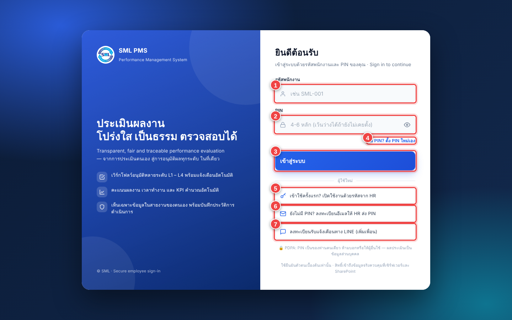
หน้าเข้าสู่ระบบ กรอกรหัสพนักงาน (เช่น SML-009) กรอก PIN 4–6 หลักที่ได้รับ กดเข้าสู่ระบบ ลืม PIN: ตั้งใหม่เองทางอีเมล เข้าใช้ครั้งแรก: เปิดใช้งานด้วยรหัสจาก HR ยังไม่มี PIN: ลงทะเบียนอีเมลให้ HR ส่ง PIN ลงทะเบียนรับแจ้งเตือนทาง LINE 💡 PIN เป็นการยืนยันตัวตนเบื้องต้นของคุณ อย่าบอกใครและอย่าให้คนอื่นล็อกอินแทน ถ้าพิมพ์ PIN ผิดครบ 5 ครั้ง ระบบจะล็อกรหัสของคุณชั่วคราว 15 นาที
2.2 เข้าใช้ครั้งแรก — เปิดใช้งานด้วยรหัสจาก HR
ถ้า HR แจกรหัสเปิดใช้งาน (รูปแบบ XXXX-XXXX-XXXX) ให้กด "เข้าใช้ครั้งแรก" แล้วทำตามนี้
กรอกรหัสพนักงาน และรหัสเปิดใช้งานจาก HR ตรวจอีเมลที่ระบบแสดง (หรือกรอกอีเมลของคุณถ้า HR ยังไม่ได้ลงไว้) แล้วกด "ส่งรหัสยืนยันไปอีเมล" เปิดอีเมล นำรหัสยืนยัน 6 หลัก (OTP) มากรอก แล้วตั้ง PIN ใหม่ 4–6 หลัก (พิมพ์ 2 ครั้ง) 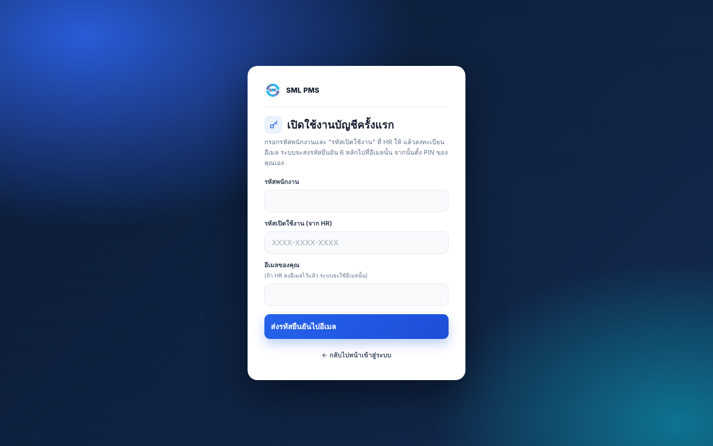
หน้าเปิดใช้งานบัญชีครั้งแรก 2.3 ลืม PIN
กด "ลืม PIN? ตั้ง PIN ใหม่เอง" กรอกรหัสพนักงาน ระบบส่งรหัส OTP ไปที่อีเมลที่ HR ลงทะเบียนไว้ แล้วตั้ง PIN ใหม่ได้เลย ถ้าไม่มีอีเมลในระบบหรืออีเมลผิด ให้แจ้ง HR
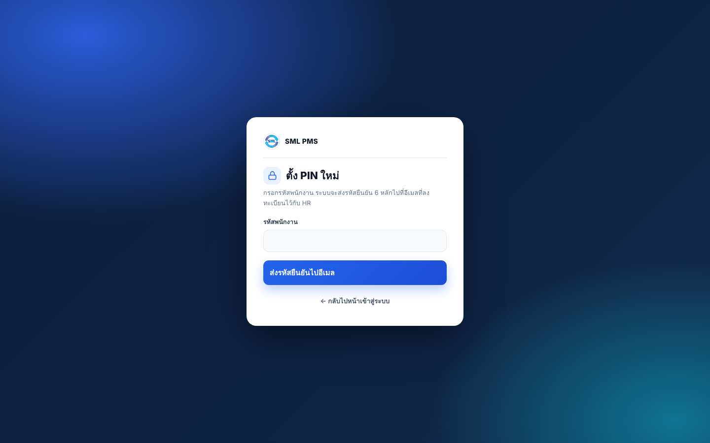
หน้าตั้ง PIN ใหม่ (ลืม PIN) 2.4 ยังไม่มี PIN และลงทะเบียน LINE
ยังไม่มี PIN: กด "ลงทะเบียนอีเมล" กรอกรหัสพนักงานและอีเมลบริษัท HR จะตรวจแล้วส่ง PIN ให้ทางอีเมลรับแจ้งเตือนทาง LINE: เพิ่มเพื่อน LINE OA ของบริษัท แล้วพิมพ์ "รหัสพนักงาน" ส่งในแชท 1 ครั้ง ระบบจะผูกบัญชีให้ และแจ้งผลประเมินพร้อมปุ่มรับทราบทาง LINE ได้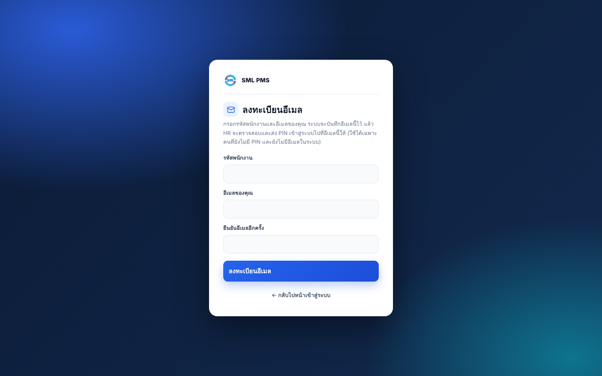
ลงทะเบียนอีเมล 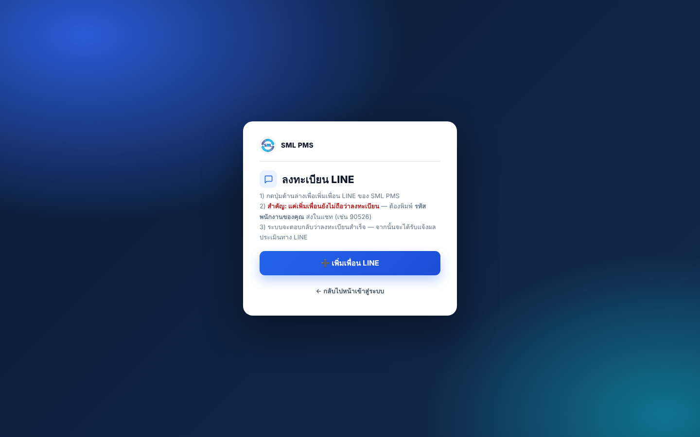
ลงทะเบียนรับแจ้งเตือนทาง LINE 2.5 รับทราบนโยบายข้อมูลส่วนบุคคล (PDPA) — ครั้งแรกที่เข้าใช้
หลังกรอก PIN ถูกต้องในครั้งแรก ระบบแสดงนโยบายความปลอดภัยและข้อมูลส่วนบุคคล ต้องอ่านและติ๊กรับทราบก่อนจึงกด "ยอมรับและเข้าสู่ระบบ" ได้ ถ้าไม่ยอมรับ จะเข้าระบบไม่ได้
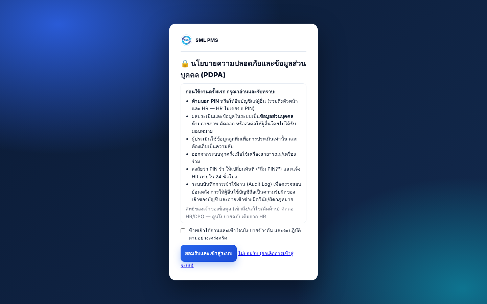
หน้ารับทราบ PDPA ห้ามบอก PIN หรือให้ยืมบัญชีผู้อื่น (HR ไม่เคยขอ PIN จากใคร)ผลประเมินเป็นข้อมูลส่วนบุคคล ห้ามถ่ายภาพหรือส่งต่อโดยไม่ได้รับมอบหมาย ระบบบันทึกการรับทราบและการเข้าใช้งานไว้ใน Audit Log 💡 ค่ารับทราบจำไว้ในเครื่อง/เบราว์เซอร์นั้น ถ้าเปลี่ยนเครื่องหรือล้างข้อมูลเบราว์เซอร์ ระบบจะถามอีกครั้ง
2.6 หน้าแรกหลังเข้าสู่ระบบ
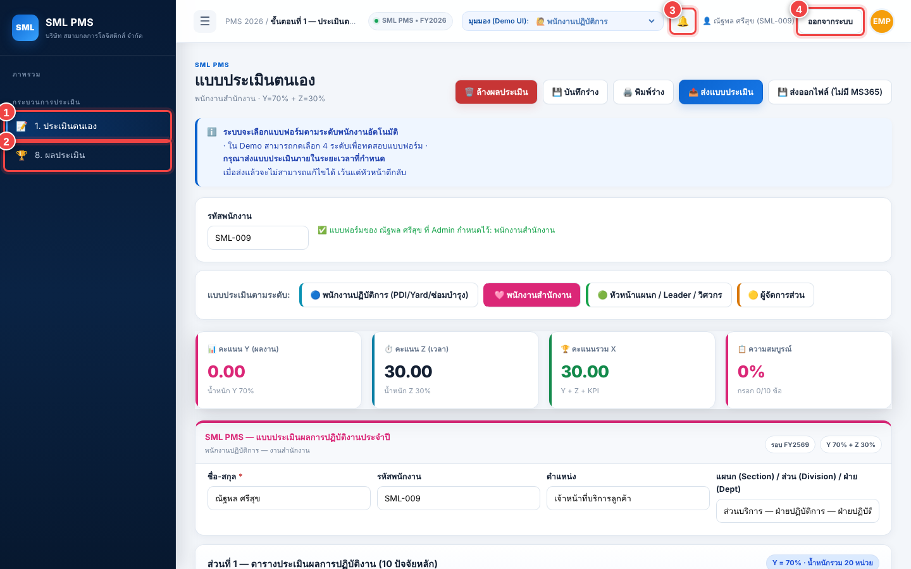
เมนูของพนักงาน (เห็นเพียง 2 เมนู) 1. ประเมินตนเอง — กรอกแบบประเมินของคุณ 8. ผลประเมิน — ดูผลและรับทราบ กระดิ่ง — การแจ้งเตือนที่ต้องทำ ออกจากระบบ (กดทุกครั้งที่ใช้เครื่องที่ใช้ร่วมกัน) 3. สำหรับพนักงาน
3.1 ประเมินตนเอง (เมนู 1)
1 กด "1. ประเมินตนเอง" แล้วกรอกรหัสพนักงาน ระบบจะเลือกแบบฟอร์มที่ HR กำหนดให้คุณโดยอัตโนมัติ (ไม่ต้องเลือกเอง)
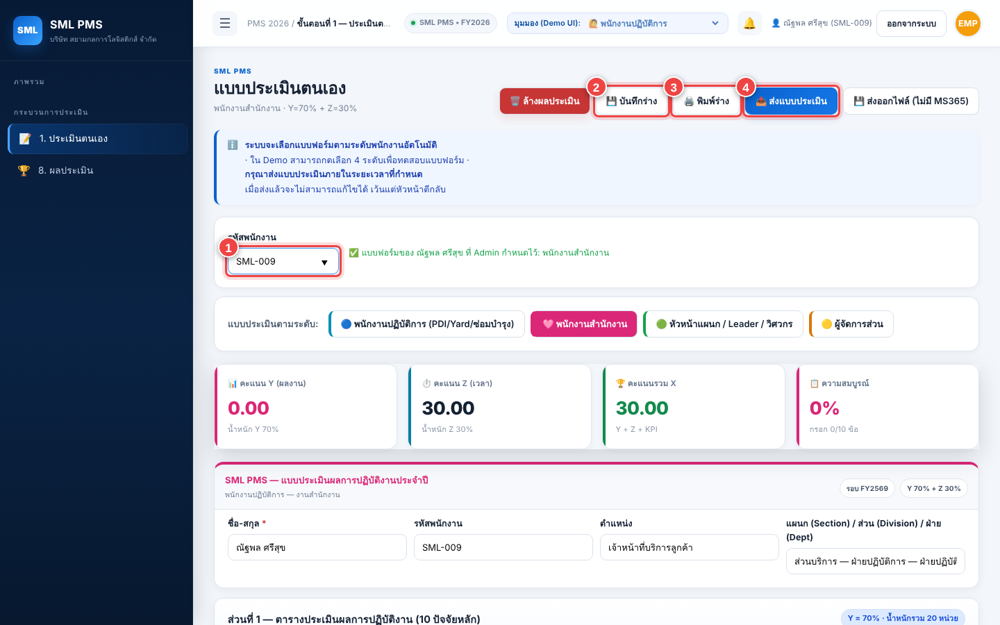
หน้าประเมินตนเอง กรอกรหัสพนักงาน บันทึกร่าง — เก็บงานไว้ก่อน ยังไม่ส่ง พิมพ์ร่าง — พิมพ์ดูก่อนส่ง ส่งแบบประเมิน — ส่งจริง ⚠️ ถ้าขึ้นข้อความว่า "ไม่อยู่ในรายชื่อ/แผนกที่กำหนด" และปุ่มเป็นสีเทา แปลว่า HR ยังไม่เปิดสิทธิ์ประเมินตนเองให้คุณ ให้ติดต่อ HR
2 เลือกเกรดทีละข้อ ในปัจจัยประเมิน 10 ข้อ ตั้งแต่ A+ (ดีเยี่ยม) ถึง C (ต้องปรับปรุง) ตัวเลขด้านขวาคือคะแนนที่ได้ และคะแนนรวมด้านบนจะอัปเดตทันที
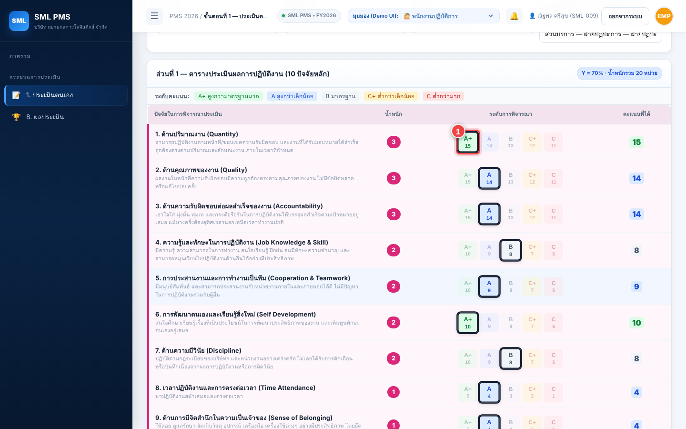
เลือกเกรดในแต่ละข้อ (ปุ่มที่ถูกเลือกจะมีกรอบเข้ม) ปุ่มเกรด A+ / A / B / C+ / C ของข้อนั้น 3 ดูสรุปคะแนนด้านบน และส่วน "รายละเอียดเวลาทำงาน (Z)" ซึ่งแสดงที่มาของคะแนนเวลา เช่น จำนวนครั้งที่สาย วันลา วันขาด (ระบบดึงจากข้อมูล HRGO ของ HR ถ้าข้อมูลไม่ตรงให้แจ้ง HR)
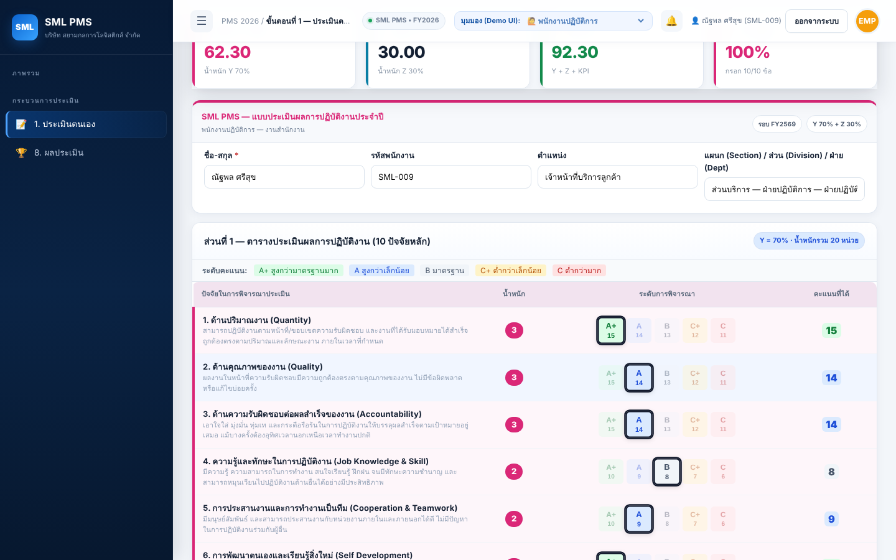
สรุป Y / Z / X และรายละเอียดเวลาทำงาน 4 เขียนจุดเด่น และสิ่งที่อยากพัฒนา (ช่วยให้หัวหน้าเข้าใจคุณมากขึ้น) แล้วกด "บันทึกร่าง" ได้ตลอด จะกลับมาแก้ภายหลังก็ได้
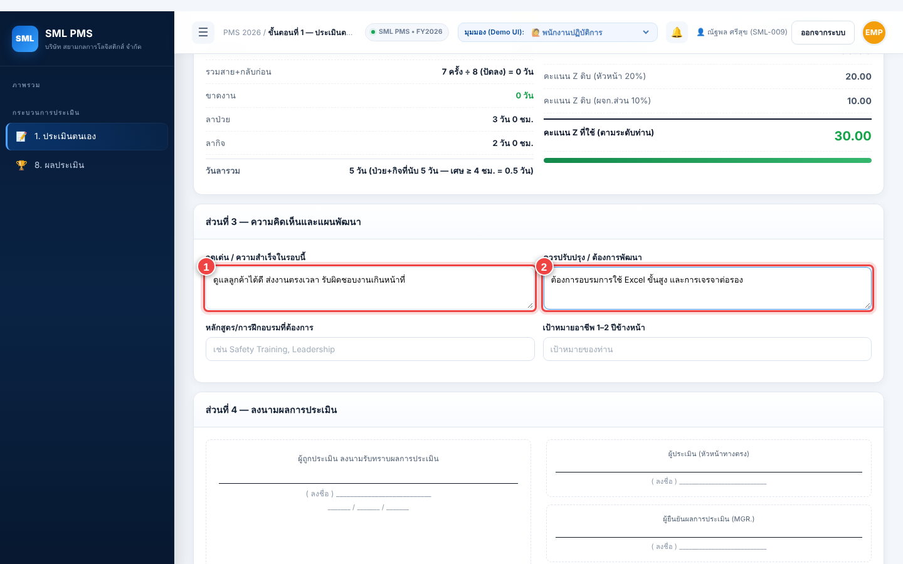
ช่องความเห็นและแผนพัฒนา จุดเด่น / ความสำเร็จในรอบนี้ ควรปรับปรุง / ต้องการพัฒนา 5 เมื่อพร้อมกด "ส่งแบบประเมิน" ตรวจคะแนนรวม ชื่อหัวหน้าที่ระบบจะส่งถึง แล้วกด "ยืนยันส่ง"
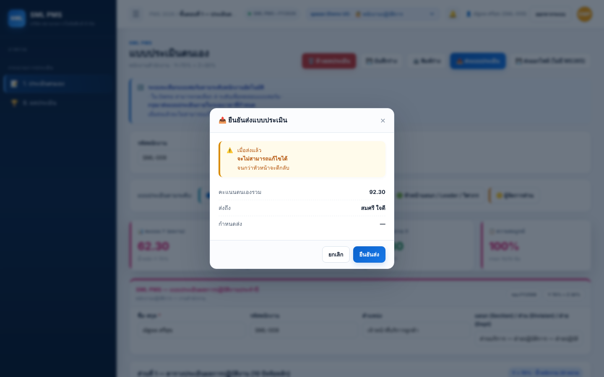
หน้าต่างยืนยันก่อนส่ง ⚠️ ส่งแล้วแก้ไขเองไม่ได้ เว้นแต่หัวหน้าตีกลับ — ตรวจให้ดีก่อนกดยืนยัน
3.2 ถ้าใบประเมินถูกตีกลับ
หัวหน้าอาจตีกลับให้คุณแก้ไข (ถอยกลับหนึ่งขั้นเท่านั้น) คุณจะเห็นกรอบสีเหลืองพร้อมเหตุผลที่ถูกตีกลับ คะแนนเดิมยังอยู่ ปุ่มส่งจะถูกล็อกไว้ ต้องแก้คะแนนอย่างน้อย 1 ข้อ หรือกด "ยืนยันว่าตรวจสอบแล้ว" (ต้องพิมพ์เหตุผลที่ยืนยันตามเดิม) จึงส่งใหม่ได้ และผู้ประเมินเดิมจะได้รับแจ้ง
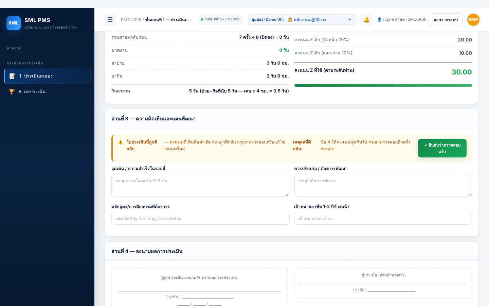
แบบประเมินที่ถูกตีกลับ แสดงเหตุผลและปุ่มยืนยัน 3.3 ดูผลและรับทราบ (เมนู 8)
เมื่อ GM อนุมัติและกดส่งผล คุณจะได้รับอีเมล/LINE แจ้ง ให้เข้าเมนู "8. ผลประเมิน" เพื่อดูคะแนนผลงาน (Y) เวลาทำงาน (Z) และคะแนนรวม (X) ส่วนเกรดจะแสดงเป็น 🔒 จนกว่าผู้บริหารอนุมัติขั้นสุดท้าย
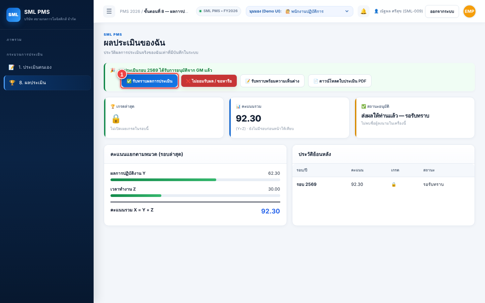
หน้าผลประเมินของฉัน รับทราบผลการประเมิน (กดเมื่อได้ดูผลแล้ว) รับทราบผลการประเมิน — กดเมื่อเห็นผลแล้ว เป็นอันเสร็จสิ้นขั้นของคุณ (ถ้าลงทะเบียน LINE แล้ว กดปุ่มรับทราบในแชท LINE ได้เลย)รับทราบพร้อมความเห็นต่าง — รับทราบ แต่บันทึกความเห็นของคุณไว้ให้ผู้ประเมิน/HR ทราบไม่ยอมรับผล / ขอหารือ — ระบุเหตุผล (อย่างน้อย 10 ตัวอักษร) และเสนอวันที่ขอพูดคุย 1–3 วัน หัวหน้าและ HR จะได้รับแจ้ง ระหว่างนี้ขั้นตอนจะหยุดรอจนกว่าจะหารือเสร็จดาวน์โหลดใบประเมิน PDF — เก็บใบประเมินของคุณไว้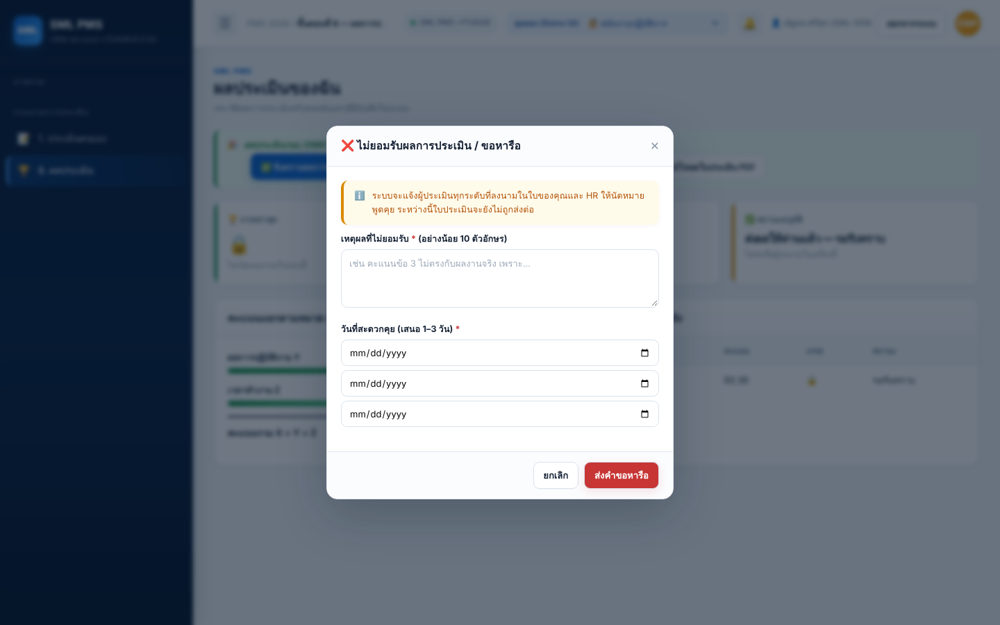
หน้าต่างขอหารือผลการประเมิน 💡 เมนู "8. ผลประเมิน" จะไม่แสดงอันดับของเพื่อนร่วมงานหรือคะแนนของคนอื่น เห็นเฉพาะข้อมูลของคุณ
4. สำหรับหัวหน้า
ตำแหน่งหัวหน้าในระบบมี 4 ระดับ ซึ่ง HR กำหนดไว้ในข้อมูลของพนักงานแต่ละคน: L1 หัวหน้าหน่วย → L2 หัวหน้าแผนก → L3 ผู้จัดการส่วน → L4 GM คุณจะเห็นเฉพาะพนักงานในสายของคุณเท่านั้น ถ้าสายไหนไม่มีผู้ประเมิน ระบบจะข้ามขั้นนั้นให้อัตโนมัติ
ระดับ เมนูที่ใช้ หน้าที่ L1 หัวหน้าหน่วย 2. ประเมินทีมงาน ให้คะแนนรอบแรกแก่ลูกทีม L2 หัวหน้าแผนก 3. สอบทานหัวหน้าแผนก ตรวจคะแนนที่ L1 ส่งมา อนุมัติหรือตีกลับ L3 ผู้จัดการส่วน 4. สอบทานผู้จัดการส่วน ตรวจคะแนนที่ L2 อนุมัติแล้ว L4 GM 5. อนุมัติ GM อนุมัติ แล้วกด "ยืนยันส่งผลให้พนักงาน"
4.1 ประเมินทีมงานรอบแรก (เมนู 2)
หน้านี้แสดงรายชื่อลูกทีมตรง ๆ พร้อมสถานะ ปุ่ม "ประเมิน" เปิดฟอร์มให้คะแนน ส่วน "ดูแบบฟอร์ม" ใช้ดูใบที่ส่งไปแล้ว (แก้ไม่ได้)
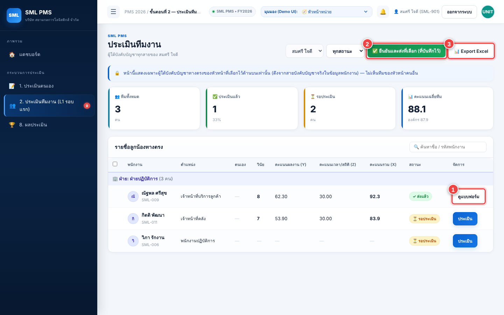
หน้าประเมินทีมงาน ประเมิน / ดูแบบฟอร์ม ของพนักงานแต่ละคน ยืนยันและส่งที่เลือก — ส่งหลายคนพร้อมกัน (ใช้กับใบที่ "บันทึกไว้ก่อน") Export Excel — ส่งออกรายชื่อพร้อมคะแนนและข้อมูลเวลา ในฟอร์ม ให้ดูข้อมูลเวลาทำงานของพนักงานด้านบนก่อน แล้วเลือกเกรดทีละข้อ (ถ้าพนักงานประเมินตนเองไว้แล้ว คะแนนของเขาจะแสดงให้เห็น คุณปรับตามความเห็นของคุณได้) พร้อมเขียนความเห็น
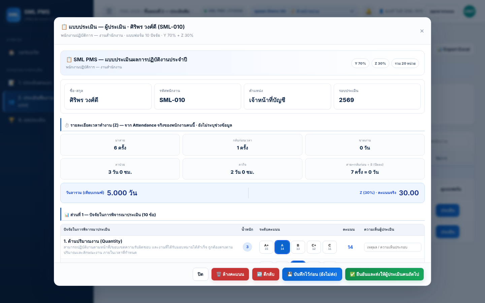
ฟอร์มประเมิน/สอบทาน: ข้อมูลพนักงานและสถิติเวลาทำงาน (Z) 4.1.1 หัวหน้าหน่วย (L1) รับแบบประเมินที่พนักงานส่งเอง
เมื่อพนักงานกดส่งแบบประเมินตนเอง ใบจะไปที่หัวหน้าหน่วย (L1) ก่อนเสมอ ระบบแจ้ง LINE/อีเมลให้ L1 สถานะในตารางจะขึ้น "รอ L1 สอบทาน" กด "ประเมิน" เพื่อเปิดฟอร์ม ตรวจและปรับคะแนนได้ แล้วกด "ยืนยันและส่งต่อ" ใบจึงไปหัวหน้าแผนก (L2)
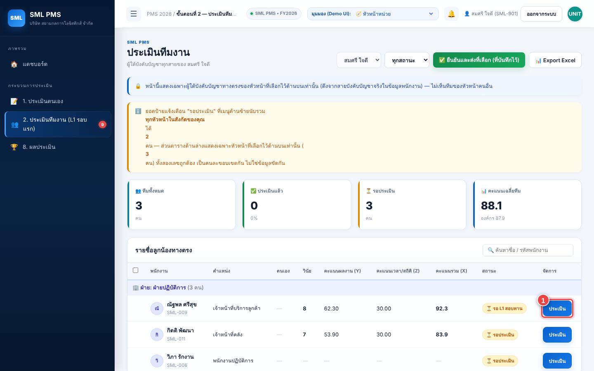
หน้าประเมินทีมงาน: พนักงานที่ส่งแล้วขึ้น "รอ L1 สอบทาน" ปุ่ม "ประเมิน" เปิดฟอร์มสอบทานของคนนี้ 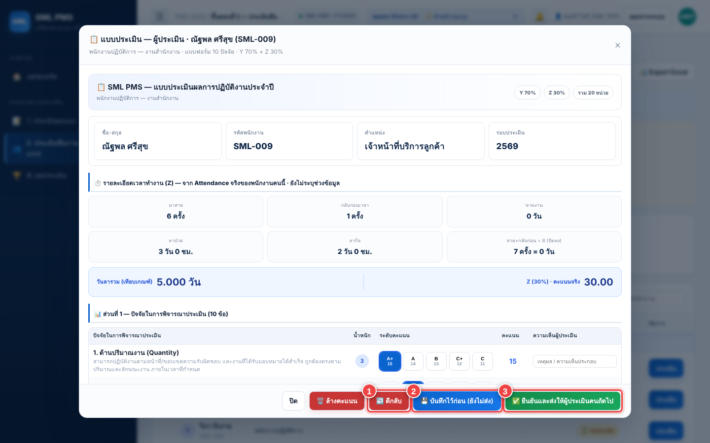
ปุ่มท้ายฟอร์มของ L1 ตีกลับ — ส่งกลับให้พนักงานแก้ (ต้องใส่เหตุผล) บันทึกไว้ก่อน — เก็บคะแนนโดยยังไม่ส่งต่อ ยืนยันและส่งต่อ — ส่งให้ L2 พร้อมแจ้งเตือน พนักงานที่ยังไม่ได้ส่ง — L1 ประเมินแทนได้ ใบจะไปที่ L2 ต่อทันที ไม่ต้องรอ พนักงานที่ไม่มีหัวหน้าหน่วย — ระบบข้าม L1 ไปหัวหน้าแผนกให้อัตโนมัติ ถ้า L1 ตีกลับ ใบกลับเป็น Draft พนักงานต้องแก้คะแนนหรือยืนยันผลเดิมพร้อมเหตุผลก่อนส่งใหม่ ⚠️ "บันทึกไว้ก่อน" ยังใช้กับใบที่อยู่ในสถานะ "รอ L1 สอบทาน" ไม่ได้ ให้กดยืนยันส่งต่อหรือตีกลับเท่านั้น
4.2 ปุ่มท้ายฟอร์ม
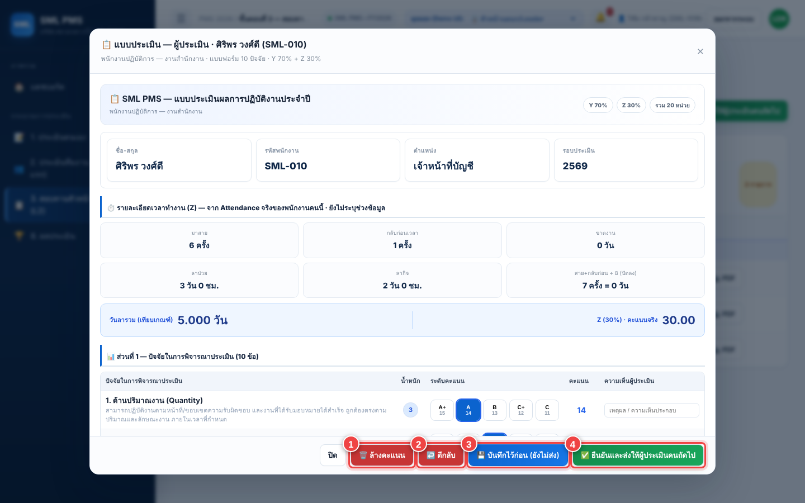
ปุ่มด้านล่างของฟอร์ม ล้างคะแนน — เริ่มให้คะแนนใหม่ ตีกลับ — ส่งกลับให้ขั้นก่อนหน้าแก้ไข (ต้องพิมพ์เหตุผล) บันทึกไว้ก่อน — เก็บคะแนนไว้ ยังไม่ส่ง และไม่แจ้งใคร (รวบรวมหลายคนแล้วค่อยส่งทีเดียวได้) ยืนยันและส่งให้ผู้ประเมินคนถัดไป — ส่งจริง ⚠️ เมื่อกด "ยืนยันและส่ง" แล้ว ใบจะออกจากคิวของคุณและแก้ไขไม่ได้ ระบบจะแจ้งผู้ประเมินคนถัดไปทางอีเมล/LINE ให้อัตโนมัติ
4.3 สอบทาน L2 / L3 (เมนู 3 และ 4)
ตัวเลขสีแดงข้างเมนูคือจำนวนใบที่รอคุณ หน้านี้แสดงรายชื่อพนักงานในสายของคุณ พร้อมคะแนน Y, Z, X เรียงจากคะแนนรวมสูงไปต่ำ สามารถกรองตามฝ่าย ส่วน แผนก กลุ่มงาน และเลือกมุมมอง "แยกตามฝ่าย" หรือ "รวมทั้งบริษัท" ได้
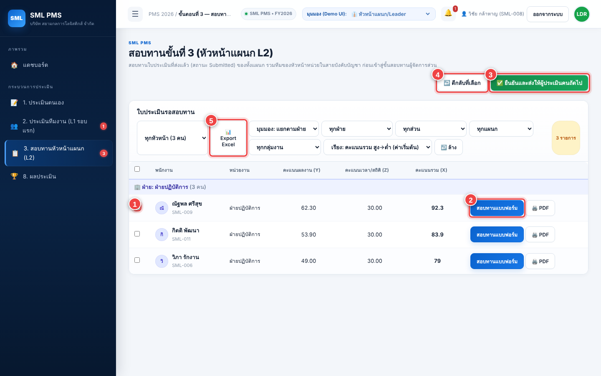
คิวสอบทาน (ตัวอย่าง: เมนู 3 หัวหน้าแผนก) ติ๊กเลือกคนที่ต้องการ สอบทานแบบฟอร์ม — เปิดดูคะแนน ความเห็น และเวลาทำงาน ยืนยันและส่งให้ผู้ประเมินคนถัดไป — อนุมัติทุกคนที่ติ๊ก ตีกลับที่เลือก — ต้องพิมพ์เหตุผล ใบกลับไปขั้นก่อนหน้า Export Excel — ส่งออกรายชื่อในคิว ถ้าใบเคยถูกตีกลับมาก่อน ระบบจะให้คุณแก้คะแนนหรือพิมพ์เหตุผลที่ยืนยันตามเดิม ก่อนส่งต่อ แต่ละระดับจะเห็นเฉพาะใบที่ถึงขั้นของตัวเอง ใบของคนที่ยังมาไม่ถึงจะขึ้น "⏳ รอผลประเมิน"
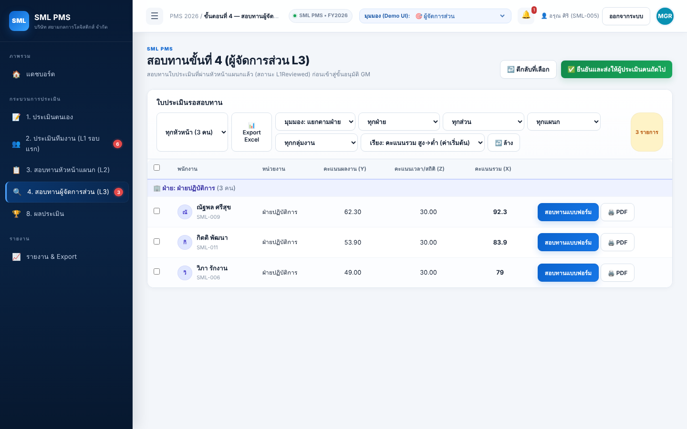
คิวสอบทานผู้จัดการส่วน (เมนู 4) 4.4 การแจ้งเตือน (กระดิ่ง)
กระดิ่งมุมขวาบนบอกงานที่รอคุณ เช่น จำนวนใบรอสอบทาน กดที่รายการเพื่อไปหน้านั้นได้เลย
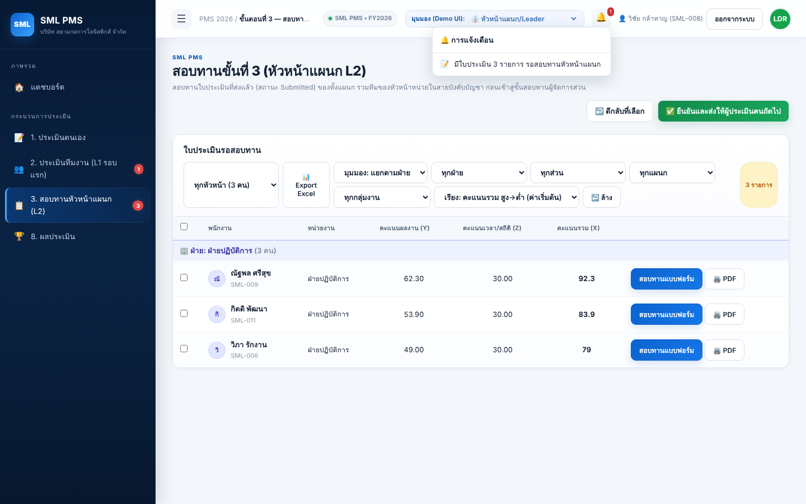
การแจ้งเตือน 4.5 GM: อนุมัติและส่งผลให้พนักงาน (เมนู 5)
GM ติ๊กใบที่ผ่านการสอบทานแล้ว กด "อนุมัติที่เลือก" จากนั้นใบจะไปอยู่ในตาราง "ผล GM อนุมัติแล้ว — ยืนยันส่งผลให้พนักงาน" ด้านล่าง ให้กด "ยืนยันส่งผลให้พนักงาน " ระบบจึงจะแจ้งพนักงานทางอีเมล/LINE พร้อมคะแนน (เกรดยังล็อกอยู่) และพนักงานจึงเข้าดูผลและรับทราบได้
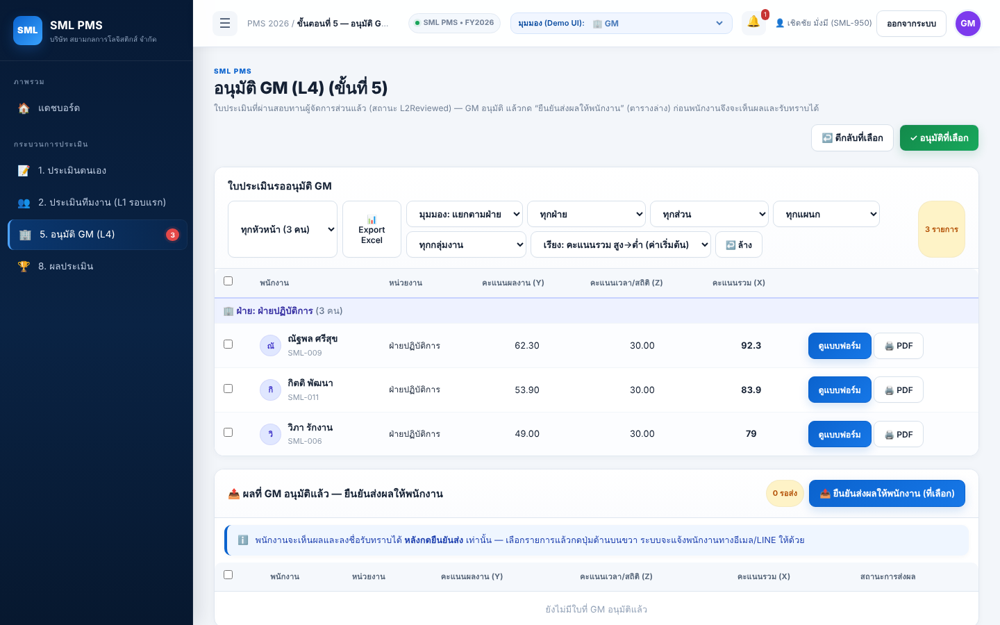
คิวอนุมัติ GM 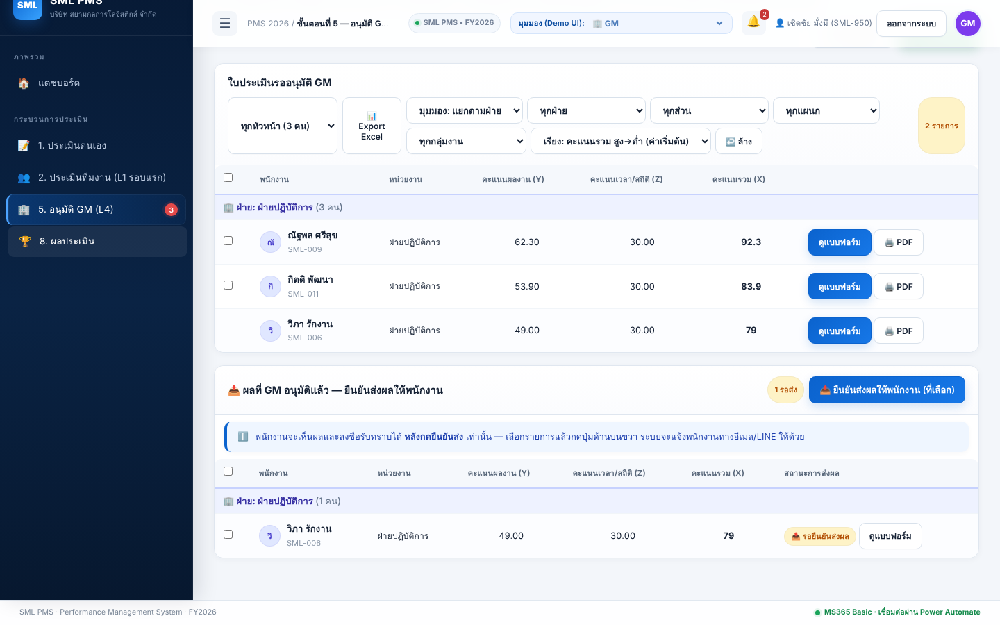
ตารางยืนยันส่งผลให้พนักงาน 4.6 แดชบอร์ดภาพรวมของทีม (หัวหน้า)
แดชบอร์ดแสดงความคืบหน้าของคนในสายคุณ แต่ละขั้นมีกี่คน เสร็จสมบูรณ์เท่าไร ค้างกี่คน ช่วยให้ตามงานได้ง่าย
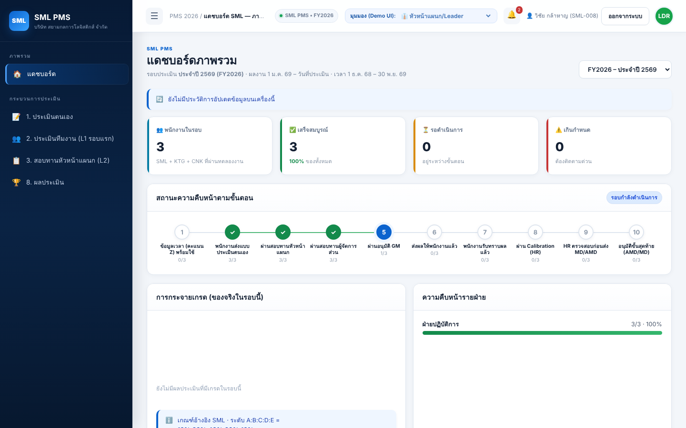
แดชบอร์ดของหัวหน้า 5. คู่มือสำหรับ Admin / HR
ส่วนนี้สำหรับผู้ดูแลระบบ (บทบาท Admin และ Admin ระบบ) เมนูกลุ่ม "ตั้งค่า" จะเห็นเฉพาะบทบาทเหล่านี้ ภาพตัวอย่างใช้ข้อมูลสมมติ
5.1 บทบาท และสิ่งที่ต้องรู้ก่อน
บทบาท ทำอะไรได้ Admin ระบบ (sysadmin) ทุกอย่าง รวมถึงแก้สิทธิ์เมนู/บทบาท แก้แบบฟอร์ม และสลับ "มุมมอง (Demo UI)" เพื่อดูหน้าของบทบาทอื่น Admin HR ตั้งค่ารอบ ข้อมูลพนักงาน เวลา KPI Calibration ส่งแจ้งผล และเครื่องมือดูแลข้อมูล ผู้บริหาร (AGM/MD) เห็นข้อมูลทั้งบริษัท อนุมัติขั้นสุดท้าย (เมนู 7)
⚠️ "มุมมอง (Demo UI)" ไว้พรีวิวหน้าของบทบาทอื่น เท่านั้น ผู้ใช้ที่ไม่ใช่ Admin จะถูกล็อกไว้ที่บทบาทของตนเอง ข้อมูลจริงถูกควบคุมที่ฝั่งเซิร์ฟเวอร์ (Worker) ตามสังกัดของผู้ล็อกอิน
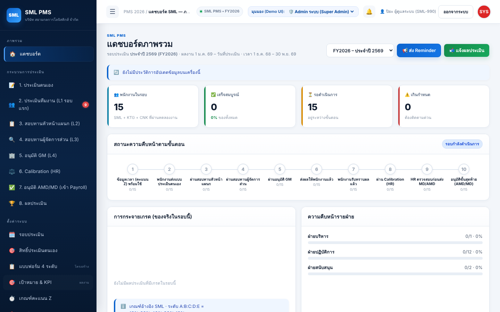
แดชบอร์ดของ Admin: ความคืบหน้าทุกขั้น ทั้งบริษัท ปุ่ม "ส่ง Reminder" — ทวงงานที่ค้าง ปุ่ม "แจ้งผลประเมิน" — ส่งผลให้พนักงาน (ใช้เป็นทางสำรอง) แถบขั้นตอน 10 ขั้น แสดงจำนวนคนที่ถึงแต่ละขั้น 5.2 Checklist ก่อนเปิดรอบประเมิน
ตรวจข้อมูลพนักงานครบ: บทบาท สายบังคับบัญชา L1–L4 ระดับแบบฟอร์ม และอีเมล (หัวข้อ 5.5) ตั้งรอบประเมิน กำหนดการ และวันที่ (5.3) ตรวจแบบฟอร์ม สัดส่วน Y/Z/KPI ของรอบ (5.7) กำหนดสิทธิ์ประเมินตนเองว่าใครหรือแผนกไหนเริ่มได้ (5.6) นำเข้าข้อมูลเวลาทำงานและระบุช่วงวันที่ของข้อมูล (5.9) ตั้ง KPI และ Cascade ถ้ารอบนี้ใช้ KPI (5.8) แจกรหัสเปิดใช้งาน/PIN ให้พนักงานที่ยังเข้าไม่ได้ (5.4) เปิดระบบ (หรือตั้งเวลาเปิดอัตโนมัติ) แล้วประกาศให้พนักงานทราบ 5.3 รอบประเมิน และการเปิด/ปิดระบบ (เมนู "รอบประเมิน")
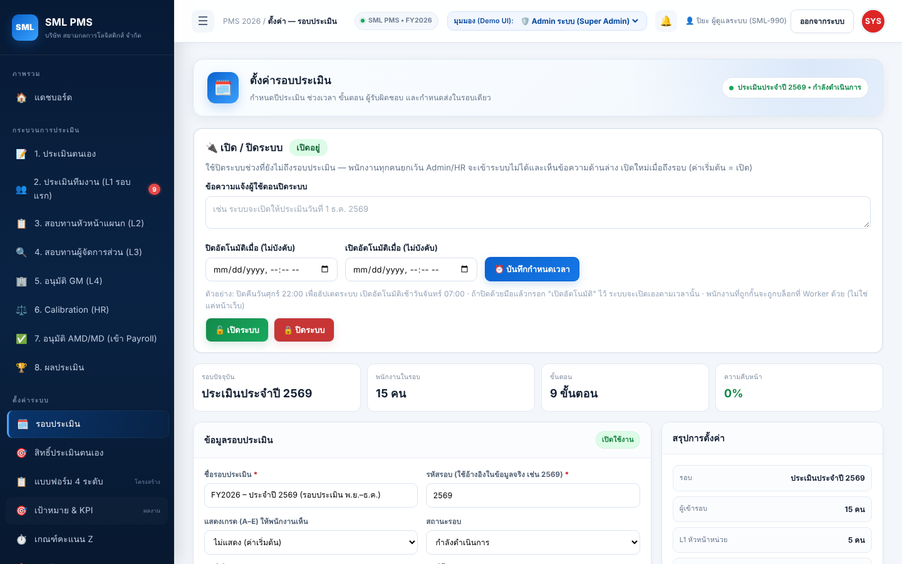
หน้าตั้งค่ารอบประเมิน เปิด/ปิดระบบ และตั้งเวลาปิด–เปิดอัตโนมัติ ชื่อรอบ รหัสรอบ (เช่น 2569) วันที่เริ่ม–สิ้นสุด ไทม์ไลน์ขั้นตอนของรอบ และการแจ้งเตือนอัตโนมัติ
รหัสรอบ (เช่น 2569) คือตัวแยกข้อมูลแต่ละปี เริ่มรอบใหม่ให้เปลี่ยนรหัสรอบ ผลประเมินรอบเก่าจะไม่ปนกับรอบใหม่ แต่ ข้อมูลเวลาทำงานไม่แยกตามรอบ ต้องนำเข้าใหม่ทับเปิด/ปิดระบบ: ปิดแล้วพนักงานและหัวหน้าเข้าไม่ได้ (Admin ยังใช้ได้) ข้อความที่แสดงแก้ได้ ตั้งเวลา "ปิดอัตโนมัติ/เปิดอัตโนมัติ" ล่วงหน้าได้ ค่าเริ่มต้นคือเปิดกำหนดการขั้นตอน (เมนู "ประวัติรอบประเมิน"): เพิ่ม/แก้/ลบขั้นตอน วันเริ่ม–สิ้นสุด และวันเตือนล่วงหน้า (เช่น 7,3,1) ขั้นที่ผูกกับสถานะใบประเมินจะคำนวณ "เสร็จ x/y คน" ให้อัตโนมัติการเตือนอัตโนมัติ: เปิดสวิตช์แล้วระบบส่งอีเมล/LINE เตือนก่อนครบกำหนดตามวันที่ตั้งไว้ (ต้องตั้ง Cron Trigger ใน Cloudflare — ดู 5.14) ปุ่ม "ดูว่าวันนี้จะส่งถึงใคร" ใช้ทดสอบโดยไม่ส่งจริงแสดงเกรดให้พนักงาน: ค่าเริ่มต้นซ่อน ติ๊กเปิดต่อรอบได้ แต่พนักงานจะเห็นเกรดหลัง MD อนุมัติขั้นสุดท้ายเท่านั้น
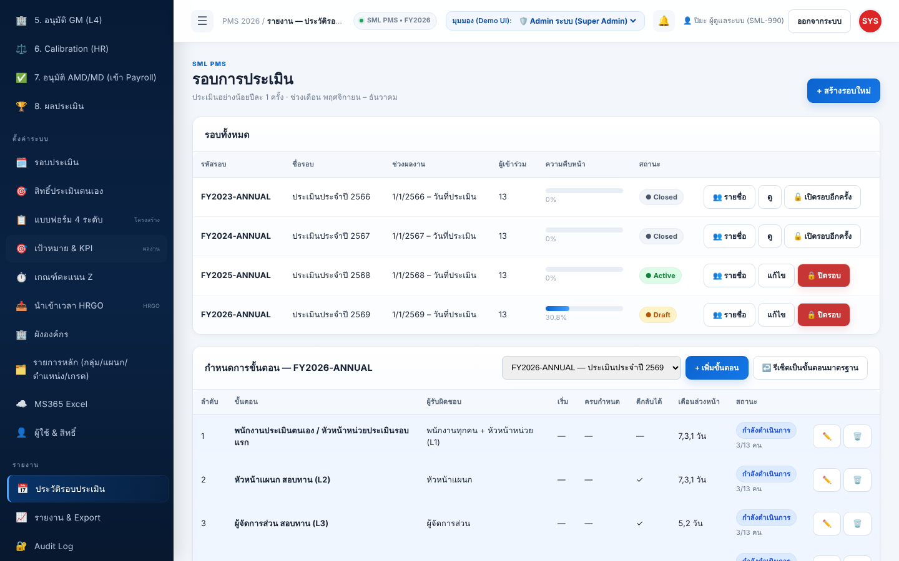
ประวัติรอบประเมิน: รายการรอบทั้งหมด และกำหนดการขั้นตอน ปุ่ม "รายชื่อ" ดูผู้เข้าร่วมเรียงตามสายบังคับบัญชา ปุ่ม "ปิดรอบ" — ส่งออกไฟล์ทั้งรอบแล้วล็อกการแก้ไข ตารางกำหนดการขั้นตอน เพิ่ม/แก้/ลบได้ ปิดรอบ / เปิดรอบอีกครั้ง: เมื่อจบรอบ กด "ปิดรอบ" ระบบนับใบที่ยังค้าง ให้ยืนยัน ดาวน์โหลดไฟล์สรุปทั้งรอบ (Y/Z/X/KPI/เกรด/เวลาทำงาน) แล้วล็อกทุกการแก้ไข (แม้ Admin) ข้อมูลไม่ถูกลบ ถ้าต้องแก้ ให้ "เปิดรอบอีกครั้ง" พร้อมเหตุผล ซึ่งบันทึกไว้ใน Audit Log
5.4 ผู้ใช้ & สิทธิ์ (เมนู "ผู้ใช้ & สิทธิ์")
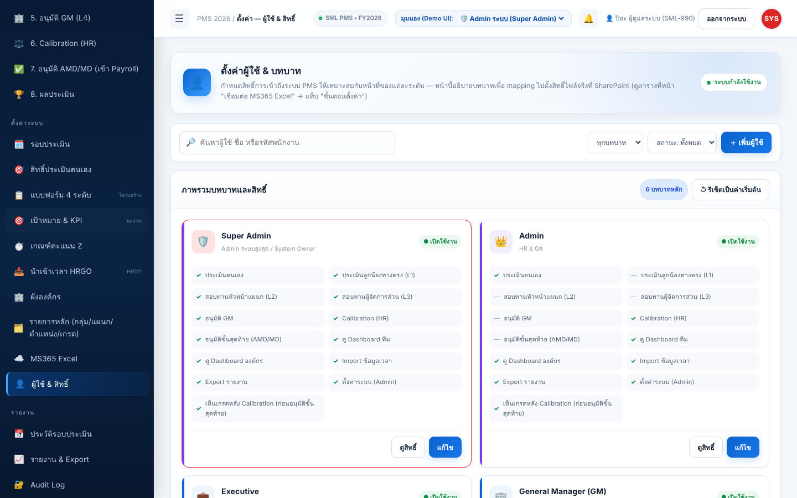
หน้าผู้ใช้และสิทธิ์ การ์ดบทบาท กด "แก้ไข" เพื่อเปลี่ยนสิทธิ์ รายชื่อผู้ใช้ทั้งหมด ค้นหา/กรอง/แบ่งหน้า ปุ่มเพิ่มผู้ใช้ และนำเข้า เพิ่ม / แก้ไขพนักงาน
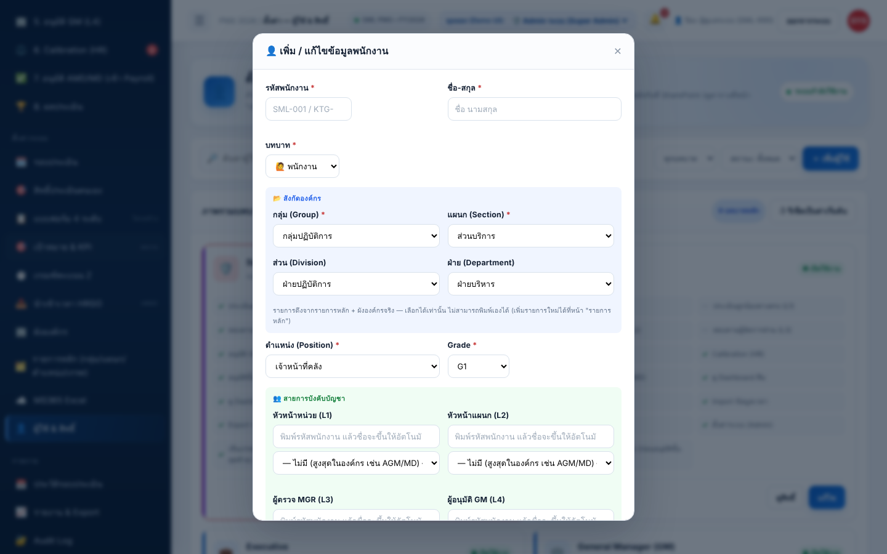
ฟอร์มเพิ่ม/แก้ไขพนักงาน รหัสพนักงาน เป็นคีย์ แก้ไม่ได้ตอนแก้ไขเรคคอร์ด ชื่อ-ตำแหน่ง-สังกัดเลือกจากรายการหลัก (5.5)สายบังคับบัญชา เลือกจากรายชื่อพนักงานจริง: L1 หัวหน้าหน่วย · L2 หัวหน้าแผนก · L3 ผู้ตรวจ MGR · L4 ผู้อนุมัติ GM (พิมพ์รหัสเพื่อค้นเร็ว) ถ้าขั้นไหนไม่มี ให้เว้นว่าง ระบบข้ามขั้นนั้นให้เอง แต่ต้องมีผู้ประเมินอย่างน้อย 1 คนระดับแบบฟอร์มประเมิน (ปฏิบัติการ/สำนักงาน/หัวหน้า/ผู้จัดการ) Admin เป็นคนกำหนด พนักงานเลือกเองไม่ได้ยกเว้นไม่ต้องรับการประเมิน ใช้กับผู้บริหารหรือกรณีพิเศษ จะไม่ถูกนับเป็นผู้เข้าร่วมอีเมล และ LINE User ID ใช้ส่งแจ้งเตือน ล้างค่า = เว้นว่างแล้วบันทึกทุกครั้งที่บันทึก ระบบ push ขึ้น Excel และแจ้งผลจริง ("✅ ขึ้น Excel แล้ว" หรือสาเหตุที่ไม่สำเร็จ) PIN และการเข้าใช้งาน
งาน วิธีทำ ตั้ง/รีเซ็ต PIN รายคน ปุ่ม 🔑 ในแถวพนักงาน พิมพ์ PIN 4 หลักเอง (ต้องพิมพ์ยืนยัน 2 ครั้ง) หรือเว้นว่างให้ระบบสุ่ม ระบบส่งอีเมลให้ และแสดง PIN ให้ Admin เห็นครั้งเดียว รหัสเปิดใช้งานครั้งแรก ปุ่ม 🎟️ รายคน หรือปุ่มสร้างให้ทุกคนที่ยังไม่มี PIN แล้วดาวน์โหลด CSV (หมดอายุ 14 วัน ใช้ครั้งเดียว) พนักงานนำไปกด "เข้าใช้ครั้งแรก?" พนักงานลงทะเบียนอีเมลเอง ปุ่ม "ส่ง PIN ให้ผู้ลงทะเบียนอีเมล" ระบบแสดงรายชื่อ+อีเมลให้ตรวจก่อน ตั้ง PIN เฉพาะคนที่ส่งอีเมลสำเร็จ ลืม PIN พนักงานตั้งเองได้ด้วย OTP ทางอีเมล (ต้องมีอีเมลในระบบ) ถ้าไม่มี ให้ Admin รีเซ็ต
⚠️ PIN ผิดครบ 5 ครั้งจะถูกล็อก 15 นาที อีเมลที่พนักงานลงทะเบียนเองไม่ได้ผ่านการยืนยันตัวตน จึงต้องตรวจก่อนส่ง PIN ทุกครั้ง
สิทธิ์ตามบทบาท และสิทธิ์เมนู
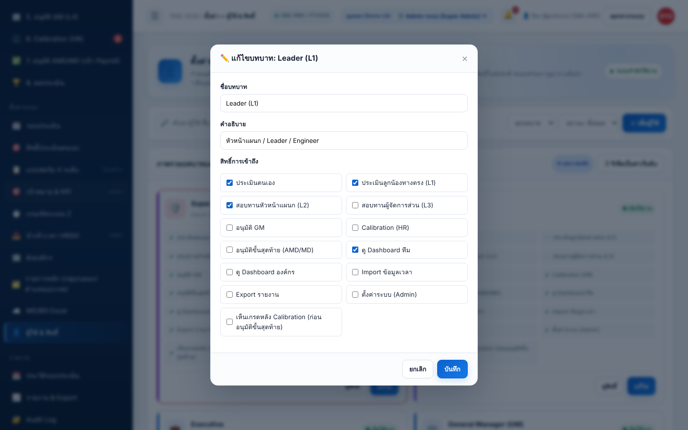
แก้ไขสิทธิ์ของบทบาท กด "แก้ไข" ที่การ์ดบทบาทเพื่อเปลี่ยนชื่อ คำอธิบาย และสิทธิ์ 13 ข้อ (เช่น สอบทานขั้น L2 · อนุมัติ GM · เห็นเกรดหลัง Calibration) ส่วน "สิทธิ์เข้าถึงเมนู (รายแถบ)" ใช้เปิด/ปิดเมนูให้แต่ละบทบาท ทั้งสองมีปุ่ม "รีเซ็ตเป็นค่าเริ่มต้น" ค่าที่ตั้งจะ sync ไปทุกเครื่องตอนผู้ใช้ล็อกอิน
5.5 ผังองค์กร นำเข้าพนักงาน และรายการหลัก
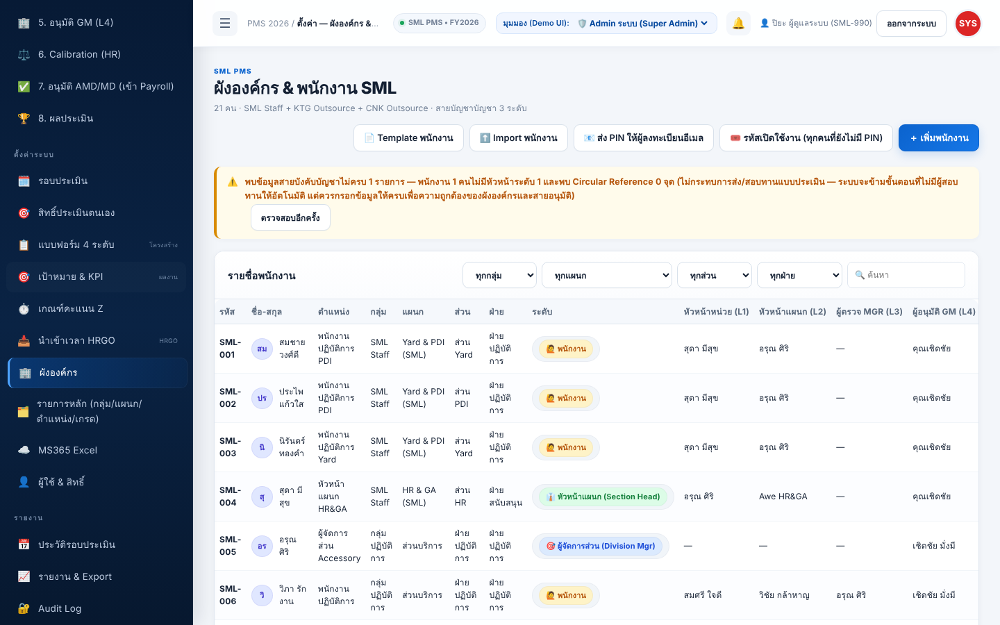
ผังองค์กรและพนักงาน แบนเนอร์เตือนข้อมูลสายบังคับบัญชาไม่ครบ/วนซ้ำ ตัวกรอง ฝ่าย/ส่วน/แผนก/กลุ่ม ปุ่ม Template / Import / เพิ่มพนักงาน / ส่ง PIN แบนเนอร์สีเหลือง แจ้งคนที่ข้อมูลสายไม่ครบ ไม่ได้บล็อกการประเมิน (ระบบข้ามขั้นให้) แต่ควรกรอกให้ครบเพื่อความถูกต้องImport พนักงานจาก CSV: โหลด Template แล้วกรอก 17 คอลัมน์ ระบบตรวจรหัสซ้ำ/บทบาท/สถานะ แสดงตัวอย่าง ➕ ใหม่ 🔄 อัปเดต ❌ ข้าม ก่อนยืนยัน และ push ขึ้น Excel ทีละแถวลาออก: เปลี่ยนสถานะพนักงานเป็นลาออก จะไม่ถูกนับเป็นผู้เข้าร่วมประเมิน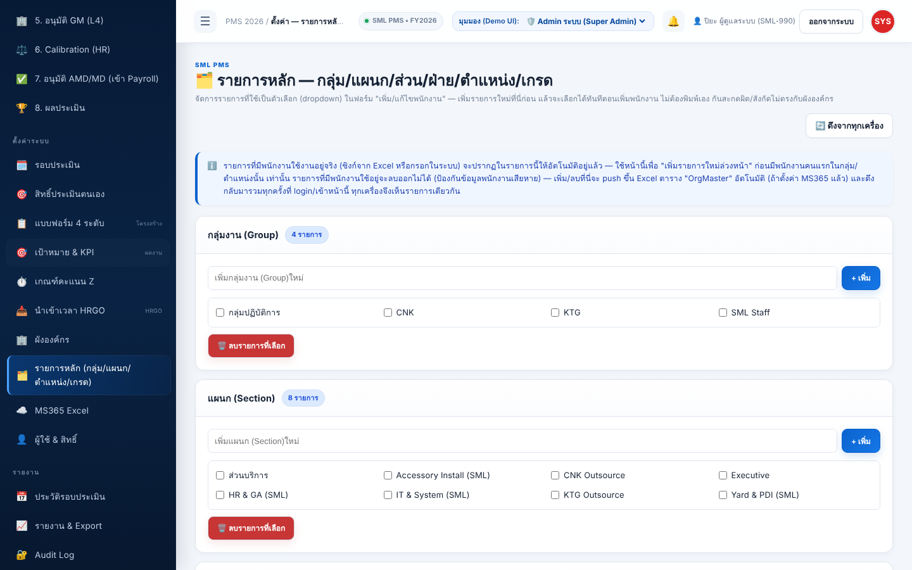
รายการหลัก: กลุ่มงาน/ส่วน/ฝ่าย/แผนก/ตำแหน่ง/เกรด เพิ่มรายการใหม่ ติ๊กเลือกแล้ว "ลบรายการที่เลือก" รายการหลักคือตัวเลือกใน dropdown ของฟอร์มพนักงาน เพิ่มได้ล่วงหน้าก่อนมีคนในหน่วยนั้น ลบไม่ได้ถ้ามีพนักงานใช้ค่านั้นอยู่ และซิงก์ข้ามเครื่องอัตโนมัติ
5.6 สิทธิ์ประเมินตนเอง
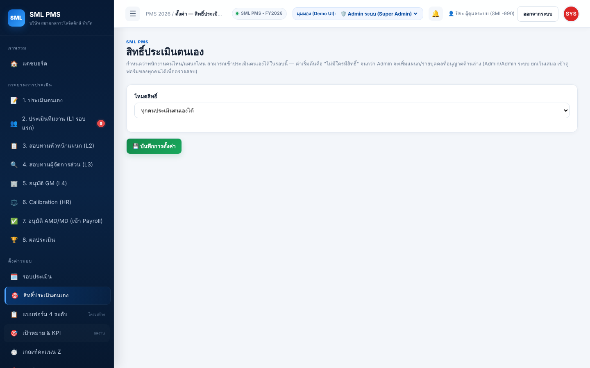
กำหนดว่าใครประเมินตนเองได้ เลือกโหมด: จำกัดเฉพาะ / ทุกคน เลือกแผนก และเพิ่มรายบุคคลเป็นข้อยกเว้น ค่าเริ่มต้นคือ ไม่มีใครประเมินตนเองได้ จนกว่า Admin จะเลือกแผนกหรือรายบุคคลแล้วกด "บันทึกการตั้งค่า" (หรือเปลี่ยนเป็นโหมด "ทุกคนประเมินได้") ผู้ที่ไม่มีสิทธิ์จะเห็นปุ่มสีเทาและข้อความเตือน ค่านี้ sync ไปทุกเครื่อง
5.7 แบบฟอร์ม 4 ระดับ และสัดส่วนคะแนน Y / Z / KPI
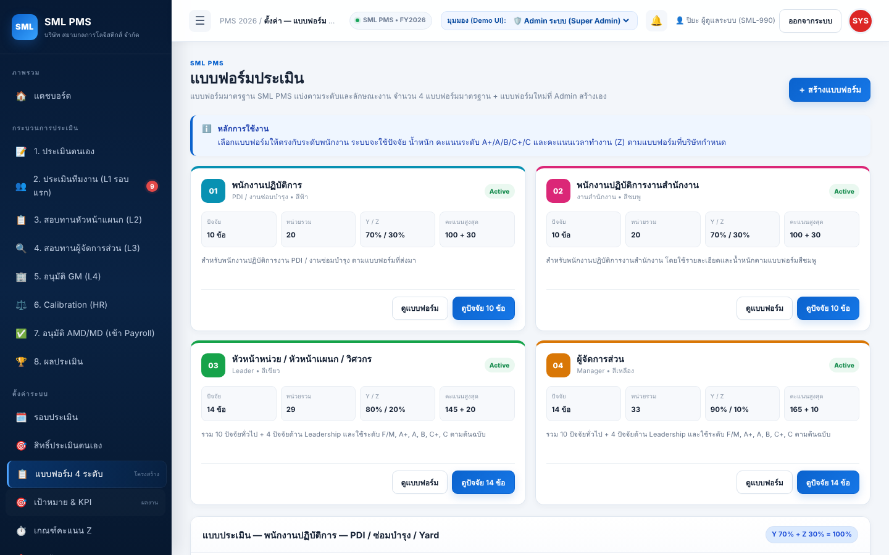
แบบฟอร์มประเมิน 4 ระดับ ปุ่มดูรายละเอียด/แก้ไขข้อและน้ำหนัก (Admin ระบบ) สร้างแบบฟอร์มใหม่จากแบบฟอร์มที่มี คะแนนรวม X = Y (ผลงาน) + Z (เวลาทำงาน) + KPI สัดส่วนตั้งได้ต่อระดับและต่อรอบ ค่าเริ่มต้น 70/30/0 ช่อง Z ล็อกไว้ (ตามตารางวันลา) ปลดล็อกได้ด้วยลิงก์ "ปลดล็อก" ปรับ KPI แล้ว Y ลดลงให้เองต้องรวมเป็น 100% ถึงจะบันทึกได้ ถ้ารอบนั้นมีใบประเมินแล้ว ระบบถามเหตุผลและบันทึกลง Audit Log ใบเดิมไม่เปลี่ยนจนกว่าจะกด "คำนวณใหม่" ที่หน้า Calibration พนักงานที่ ไม่มี KPI จะได้สัดส่วน KPI คืนเข้า Y แก้ข้อ/น้ำหนักแล้วมีปุ่มรีเซ็ตคืนค่าเริ่มต้น ค่าที่แก้ sync ไปทุกเครื่อง เพราะมีผลต่อคะแนนของทุกคน 5.8 เป้าหมาย & KPI และ Cascade
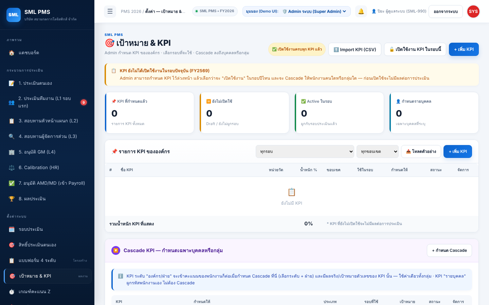
หน้าเป้าหมาย & KPI เพิ่ม KPI / Import CSV / Cascade ตัวกรองรอบ/ขอบเขต 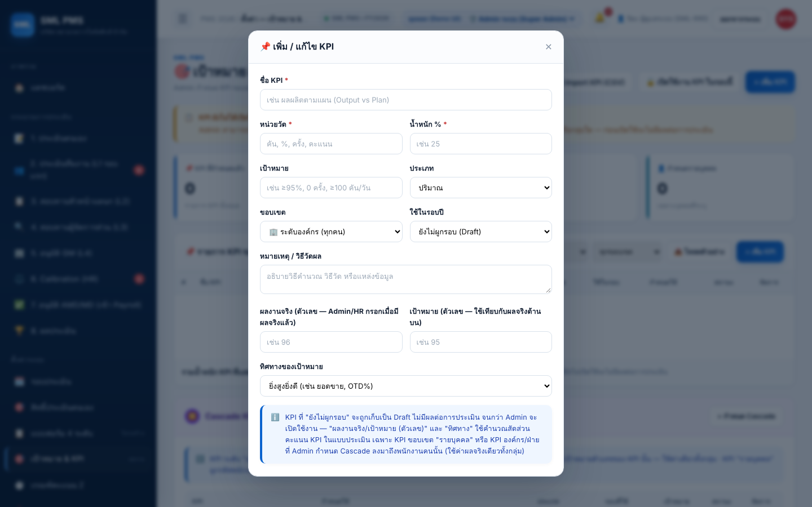
เพิ่ม/แก้ไข KPI ขอบเขต: องค์กร · ฝ่าย · รายบุคคล (รายบุคคลต้องระบุรหัสพนักงาน กรอกเป้าหมายตัวเลข ผลจริง และทิศทาง ยิ่งมาก/น้อยยิ่งดี)ปีที่ใช้ ต้องตรงกับรหัสรอบจึงจะเข้าสูตรคะแนน ตัวเลือกดึงจากรอบจริงCascade: ส่ง KPI องค์กร/ฝ่ายลงระดับ+ฝ่าย กรอกผลจริงรายคนได้ที่ปุ่ม "👤 ผลรายคน" ไม่กรอก = ใช้ผลกลุ่มImport CSV: ตรวจทุกแถวและแสดงตัวอย่างก่อนเขียน มีรหัส KPI เดิม = อัปเดตลบ KPI ลบทั้งในเว็บและ Excel เพิ่ม KPI หลังประเมินไปแล้ว ใบที่ยังไม่ผ่าน Approved กด "🔄 คำนวณใหม่ (KPI)" ที่ Calibration ได้ เกรดไม่เปลี่ยนจนกว่ารัน Bell Curve ใหม่ 5.9 เกณฑ์ Z และนำเข้าข้อมูลเวลา HRGO
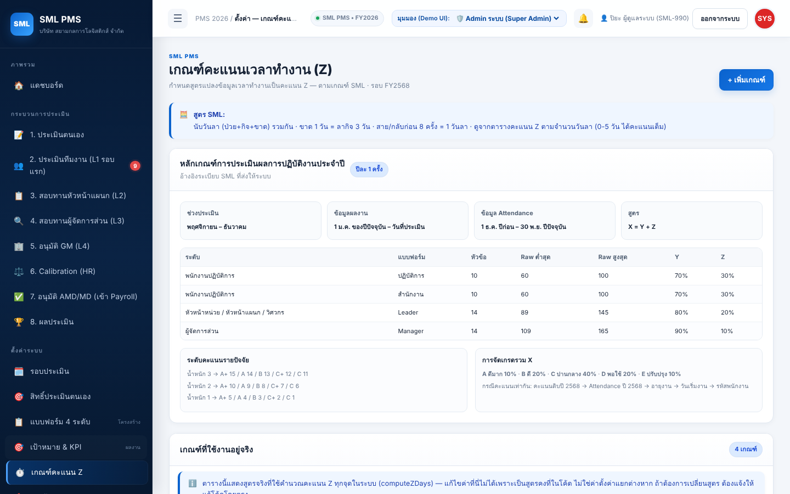
เกณฑ์คะแนนเวลาทำงาน (Z) สาย/กลับก่อน 8 ครั้ง = 1 วัน (เศษตัดทิ้ง) ขาดงาน 1 วัน = 3 วัน ลากิจ+ลาป่วยรวมกันแล้วดูเศษชั่วโมง: เศษน้อยกว่า 4 ชม. ไม่นับ 4–8 ชม. นับ 0.5 วัน (1 วัน = 8 ชม.) นำวันลารวมไปเทียบตารางคะแนน (0–5 วันได้เต็ม จากนั้นลดลงตามระเบียบบริษัท) หน้านี้เป็นคำอธิบายสูตรที่ใช้จริง ไม่ใช่ช่องแก้ไข 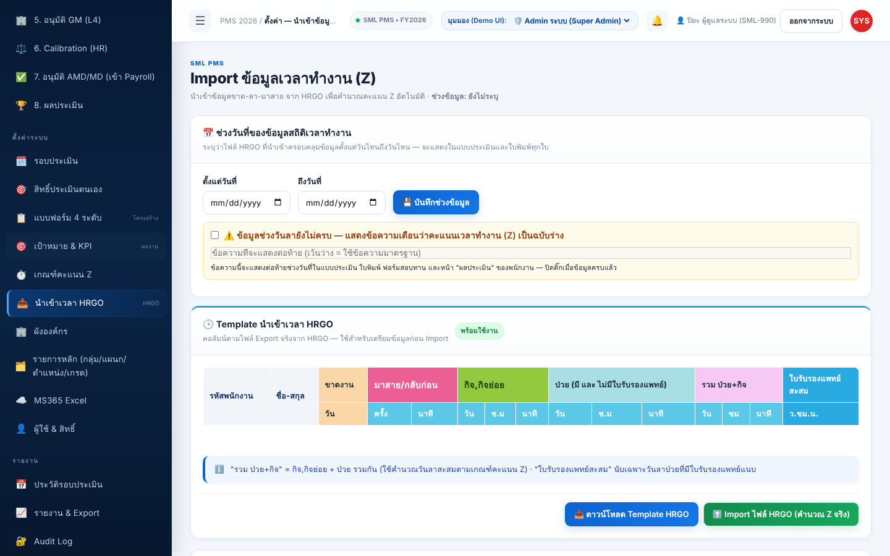
นำเข้าข้อมูลเวลา HRGO ระบุช่วงวันที่ของข้อมูล (แสดงในแบบประเมินและใบพิมพ์) อัปโหลดไฟล์ HRGO (CSV) กรอกวันลารายบุคคล / ค้นหาในรายการ / ส่งออก ช่วงวันที่ข้อมูล: ระบุเสมอ และติ๊ก "ข้อมูลช่วงวันลายังไม่ครบ" ได้ถ้าข้อมูลยังไม่ครบ ข้อความเตือนจะขึ้นในแบบประเมิน ผลประเมิน และใบพิมพ์นำเข้าไฟล์: ระบบอ่านชื่อจากข้อมูลพนักงานเสมอ ข้ามรหัสที่ไม่มีในระบบและรายงานให้ ถ้ามีคนที่มีข้อมูลเดิมอยู่แล้ว จะถามยืนยันก่อนทับ แล้ว push ขึ้น Excel อัตโนมัติกรอก/แก้ไขรายบุคคล: กรอกขาด สาย กิจ ป่วย (วัน-ชม.-นาที) ใบรับรองแพทย์ แก้ในแถวได้ ลบแล้วลบทั้งเว็บและ Excelระบบ push ขึ้น Excel เฉพาะช่องกรอก ไม่แตะคอลัมน์สูตรวันลารวม/Z ใน Excel ปุ่ม Export สถิติสะสมได้รูปแบบเดียวกับใบสรุป ⚠️ ห้ามยืนยัน Calibration ถ้าคนในคิวไม่มีข้อมูลเวลา (Admin ไม่ควรข้าม) เพราะ Z จะไม่ใช่ข้อมูลจริง
5.10 Calibration และ Bell Curve (เมนู 6)
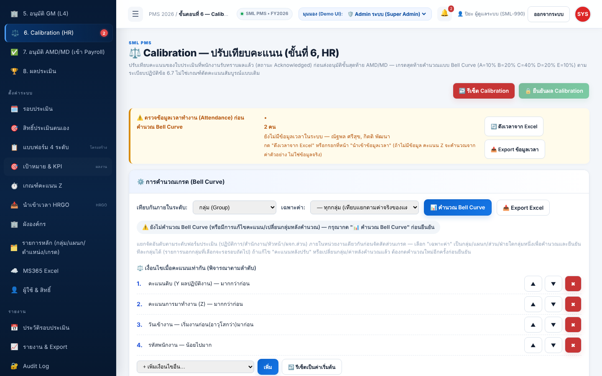
หน้า Calibration (HR) แบนเนอร์ข้อมูลเวลา: คนที่ไม่มีข้อมูล/Z ไม่ตรง การ์ด Bell Curve: เลือกกลุ่ม แล้ว "คำนวณ Bell Curve" ลำดับตัดสินเมื่อคะแนนเท่ากัน (เพิ่ม/ลบ/เลื่อนได้) ตารางรายบุคคล พร้อมตัวกรองและ Export ตรวจแบนเนอร์ข้อมูลเวลา แก้ให้ครบก่อน (ดึงจาก Excel หรือกรอกที่หน้านำเข้า) ถ้า Z ไม่ตรง กด "คำนวณ Z ใหม่" เลือกระดับกลุ่มเปรียบเทียบ (กลุ่มงาน/ส่วน/ฝ่าย/แผนก) และ "เฉพาะค่า" เช่นแผนกบัญชี ดูรายชื่อในกลุ่มที่เลือกในตารางตัวอย่างได้ ปล่อยว่าง = ทุกกลุ่ม กด "📊 คำนวณ Bell Curve" ระบบจัดเกรดตามโควตา A 10% · B 20% · C 40% · D 20% · E 10% (กลุ่มตั้งแต่ 5 คนขึ้นไปจะมีอย่างน้อยเกรดละ 1 คน) คะแนนเท่ากันตัดสินตามลำดับที่ตั้งไว้ รหัสพนักงานเป็นตัวตัดท้ายเสมอ แก้ "คะแนนหลังปรับ" และ "หมายเหตุวินัย/ใบเตือน" ได้ในแถว ถ้าแก้คะแนนต้องคำนวณใหม่ กด "ยืนยันผล Calibration" ระบบเขียนเกรดจริงและส่งต่อเฉพาะกลุ่มที่คำนวณแล้ว กลุ่มอื่นยังรอ ทำทีละกลุ่มได้ ✏️ ปรับเกรดเอง (Admin) ต้องใส่เหตุผล ถือเป็นข้อยกเว้นและบันทึกแยกใน Excel/Audit Log↩️ รีเซ็ต Calibration ย้อนใบที่ Calibrated กลับมาแก้ได้ (ใบที่ MD อนุมัติแล้วรีเซ็ตไม่ได้)หมายเหตุวินัย: HR บันทึกได้ตั้งแต่ก่อน Calibration จากหน้าต่างสอบทาน ข้อความแสดงในใบพิมพ์ผลคำนวณชั่วคราวที่ยังไม่ยืนยันจะหายถ้ามีคนอื่นเลื่อนขั้นใบเดิม หรือแก้คะแนน ให้คำนวณใหม่ ตรวจสอบหลัง Calibration
หลังยืนยัน ใบอยู่สถานะ Calibrated ในการ์ด "ตรวจสอบหลัง Calibration" ด้านล่างหน้าเดียวกัน HR ตรวจแล้วกด "อนุมัติที่เลือก" เพื่อส่ง AMD/MD หรือ "ตีกลับ" (ต้องใส่เหตุผล) กลับไป Calibration
5.11 อนุมัติขั้นสุดท้าย AMD / MD (เมนู 7) และ Payroll
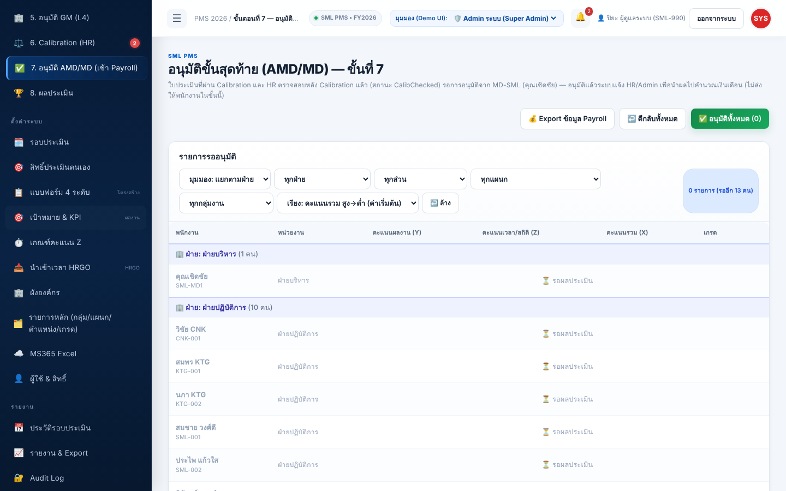
คิวอนุมัติ AMD/MD (เห็นเฉพาะใบที่ HR ตรวจหลัง Calibration แล้ว) ผู้บริหารติ๊กเลือกแล้ว "อนุมัติ" หรือ "ตีกลับ" (ต้องใส่เหตุผล กลับไปขั้นตรวจหลัง Calibration) อนุมัติแล้ว ระบบ ไม่ส่งผลให้พนักงาน (พนักงานเห็นผลตั้งแต่ GM ส่งผลไปแล้ว) แต่ส่งอีเมลแจ้ง Admin/HR พร้อมรายชื่อ คะแนน เกรด เพื่อไปทำ Payroll ต่อ ปุ่ม "Export ข้อมูล Payroll" ส่งออก CSV เฉพาะใบ Approved แล้วเท่านั้น (ระบบไม่มีข้อมูลเงินเดือน HR นำไปใช้ต่อเอง) เมื่อ Approved แล้วเกรดจริงจึงแสดงให้พนักงาน (ถ้ารอบนั้น Admin เปิดให้เห็นเกรด) 5.12 ส่ง Reminder และแจ้งผลประเมิน (ปุ่มบน Dashboard)
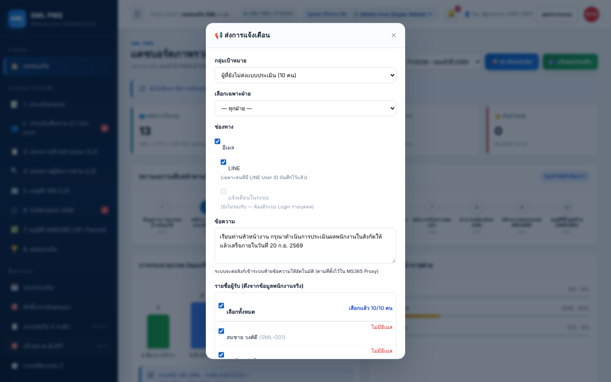
ส่ง Reminder เลือกกลุ่มเป้าหมาย: ยังไม่ส่ง / หัวหน้า / ทุกคน / เลือกรายคน กรองเฉพาะฝ่าย เลือกช่องทาง อีเมล และ LINE แก้ข้อความ แล้วกด "ส่งทันที" ถ้าตั้ง Proxy แล้ว ระบบส่งอีเมลเป็นรายคนผ่านเซิร์ฟเวอร์ และส่ง LINE ให้คนที่ลงทะเบียน LINE ไว้ แล้วรายงานจำนวนสำเร็จ/ไม่สำเร็จจริง ถ้ายังไม่ตั้ง จะเปิดโปรแกรมอีเมลของคุณแทน (ผู้รับอยู่ใน Bcc) ผู้รับที่ไม่มีอีเมล/LINE ถูกข้ามและบอกในรายงาน 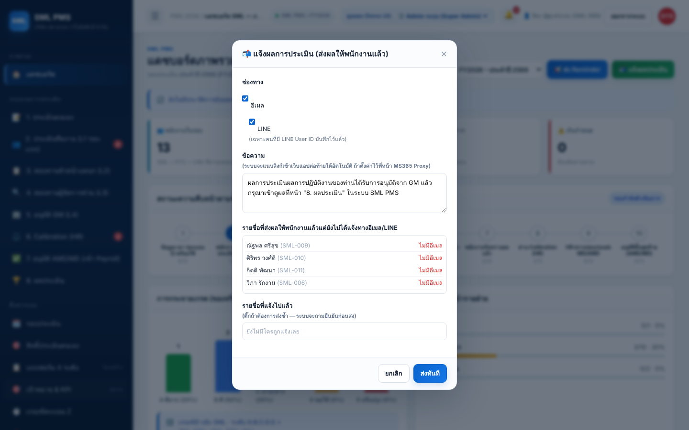
แจ้งผลประเมิน รายการที่ GM อนุมัติแล้วแต่ยังไม่ได้แจ้ง รายชื่อที่แจ้งไปแล้ว ติ๊กเพื่อส่งซ้ำ (ระบบถามยืนยัน) ปกติ GM เป็นผู้กด "ยืนยันส่งผล" เอง ระบบแจ้งพนักงานอัตโนมัติ ปุ่มนี้ไว้เป็นทางสำรองหรือส่งซ้ำ ข้อความจะแนบลิงก์เข้าระบบให้พนักงานล็อกอินด้วยตนเอง
5.13 พนักงานขอหารือผลประเมิน
ถ้าพนักงานกด "ไม่ยอมรับผล / ขอหารือ" ผู้ประเมินในสายและ HR จะเห็นแถบแดง "ขอหารือ" ในกระดิ่ง และป้ายแดงข้างชื่อในคิว กดเข้าไปดูเหตุผลและวันที่พนักงานเสนอ
ผู้ประเมินในสายหรือ HR กด "ยืนยันวัน" ตามที่พนักงานเสนอ HR/Admin เท่านั้น บันทึกผลการหารือ: "คงผลเดิม" (พนักงานรับทราบต่อได้) หรือ "ประเมินใหม่" (ใบย้อนไปให้ผู้ประเมินแก้)ค้างเกิน 7 วัน หรือเลยวันนัด ขึ้นสถานะ "เกินกำหนด" และระบบเตือนซ้ำ (ถ้า Admin เปิดหน้าไว้) เรื่องที่ยังเปิดอยู่จะกันไม่ให้พนักงานกดรับทราบจนกว่าจะปิดเรื่อง ส่วน "รับทราบพร้อมความเห็นต่าง" ไม่บล็อกขั้นตอน 5.14 MS365 / Excel / Worker และเครื่องมือดูแลข้อมูล (เมนู "MS365 Excel")
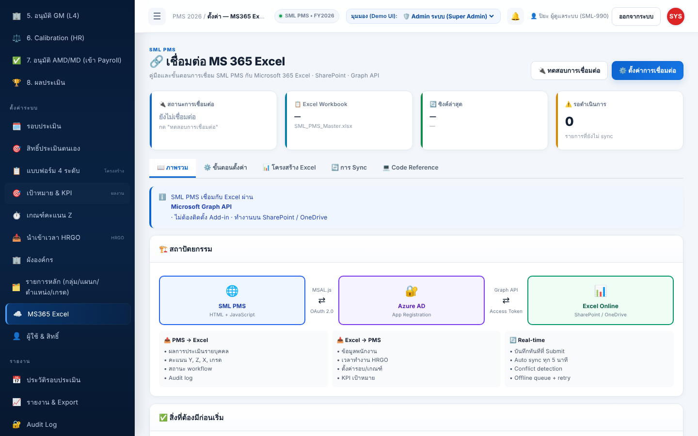
หน้า MS365 Excel ข้อมูลทั้งหมดอยู่ในไฟล์ Excel บน SharePoint และผ่านเซิร์ฟเวอร์ตัวกลาง (Cloudflare Worker) เว็บไม่เก็บฐานข้อมูลของตัวเอง ข้อมูลจึงตรงกันทุกเครื่อง ส่วนค่าบางอย่างเช่นสถานะ Draft/ธงต่าง ๆ อยู่ในเครื่องตามสถานะการทำงาน
งาน รายละเอียด ซิงก์ข้อมูล ดึงอัตโนมัติตอนล็อกอิน/รีโหลด และทุก 30 วินาทีในหน้าคิวประเมิน ปุ่มดึงมือมีในหน้านี้ ผลทุกครั้งดูได้ใน Sync Log Sync Log ที่แรกที่ควรดูเมื่อมีปัญหา "ไม่ขึ้น Excel" จะแสดงสำเร็จ/ล้มเหลวพร้อมเหตุผลจริงของทุกการ push/pull ลบแถวซ้ำเก่าใน Appraisals นับก่อน (dry-run) แล้วยืนยัน เก็บแถวที่สถานะก้าวหน้าสุดต่อ 1 คน/รอบ/ระดับ ควรสำรองไฟล์ก่อน เก็บถาวร Audit Log / Approvals เก่า ดาวน์โหลดเป็นไฟล์ก่อนแล้วลบแถวที่เก่ากว่าวันที่เลือก (ต้องเก่ากว่า 60 วัน) ใช้ได้เมื่อตารางนั้นอยู่ใน SharePoint List ย้ายตารางไป SharePoint List สำหรับตารางที่โตเร็ว (AuditLog, Approvals, Appraisals) ทำตามขั้นตอนในหน้า แล้วตั้ง LIST_TABLES ใน Cloudflare ล้างข้อมูลทดสอบ เลือกล้างแยกส่วนได้: ผลประเมิน / สถิติเวลา / Audit Log ต้องพิมพ์คำว่า "ล้างข้อมูล" ระบบดาวน์โหลดไฟล์สำรองให้ก่อน ไม่แตะพนักงาน/PIN/ตั้งค่า ใช้ตอนจบช่วงทดสอบก่อนใช้งานจริง
⚠️ ล้างข้อมูลและลบแถวซ้ำ ย้อนกลับไม่ได้ (กู้จากไฟล์สำรองเท่านั้น) ทำเมื่อแน่ใจและแจ้งทีมก่อน
ค่าที่ตั้งผ่าน Cloudflare (ผู้ดูแลระบบ IT): FILE_PATH (ที่อยู่ไฟล์ Excel ใน SharePoint) · SEND_AS_EMAIL (กล่องส่งอีเมล) · LINE_CHANNEL_ACCESS_TOKEN/LINE_CHANNEL_SECRET (LINE) · SESSION_SECRET (กุญแจบัตรผ่าน) · Cron Trigger 0 2 * * * (เตือนอัตโนมัติ) แก้แล้วต้อง Deploy Worker ใหม่ การแก้โค้ดฝั่ง Worker ต้อง Deploy เสมอ แต่การแก้หน้าเว็บมีผลทันทีที่อัปเดตขึ้น GitHub Pages
5.15 รายงาน & Export และ Audit Log
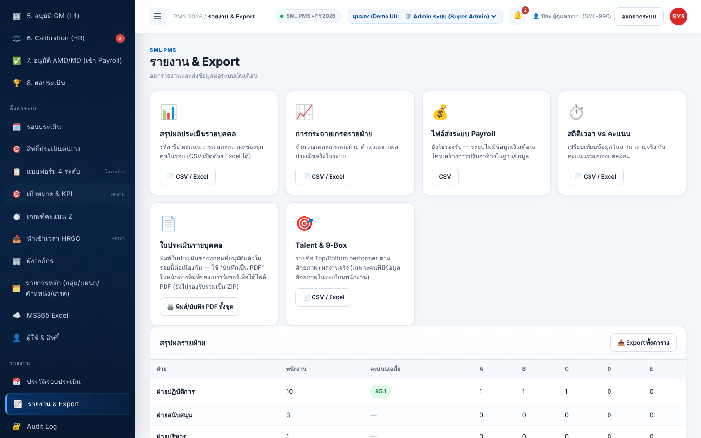
รายงาน & Export สรุปรายบุคคล (มี Y/Z/X/KPI/เกรด/เวลาทำงาน) Export Payroll (เฉพาะใบ Approved) สรุปรายฝ่าย/เกรด รายงานใช้ได้ทุกชนิดเป็นไฟล์ CSV (เปิดใน Excel ได้ตรง) เกรดในรายงานจะนับเฉพาะใบที่ถึง Approved (หรือ Calibrated ถ้ามีสิทธิ์) ส่วนรายงานที่เห็นโดยหัวหน้ากรองตามสังกัด
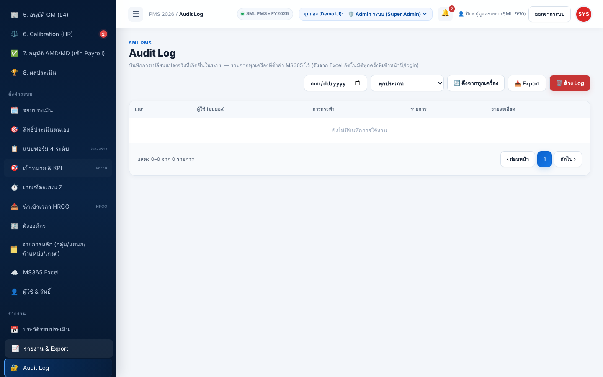
Audit Log: บันทึกการกระทำทุกอย่าง กรองตามวันที่/ประเภท/ผู้ใช้ ดึงจากทุกเครื่อง Audit Log บันทึกการเข้า/ออกระบบ การอนุมัติ ตีกลับ ปรับเกรด เปลี่ยนสิทธิ์ ล้างข้อมูล ฯลฯ พร้อมเวลาจริง และ sync ขึ้น Excel เปิดหน้านี้เพื่อดึงข้อมูลจากทุกเครื่อง
5.16 ปัญหาที่ Admin พบบ่อย
อาการ สาเหตุ / วิธีแก้ บันทึกแล้วไม่ขึ้น Excel ดู Sync Log: ไม่ใช่ Admin (403), ยังไม่ตั้ง Proxy, ไม่มีตารางใน Excel, หรือจำนวนคอลัมน์ไม่ตรง ถ้าขึ้นว่า "เพิ่มแถวใหม่ ไม่ได้แก้แถวเดิม" ให้ตรวจว่า Worker ชี้ไฟล์เดียวกับที่เปิดดู หัวหน้าไม่เห็นลูกทีม ตรวจช่อง L1–L4 ของลูกทีมว่าใส่ "ชื่อ" ของหัวหน้าถูกต้อง (ไม่ใช่รหัส) และไม่มีช่องว่างเกิน พนักงานเข้าไม่ได้ ยังไม่มี PIN (ส่งรหัสเปิดใช้งาน), ถูกล็อก 15 นาที, หรือระบบถูกปิด (ดู 5.3) ส่ง LINE ไม่ถึง พนักงานต้องพิมพ์รหัสพนักงานในแชทบอทแล้ว (เพิ่มเพื่อนอย่างเดียวไม่พอ) และตาราง EmployeeSettings ใน Excel ต้องมีคอลัมน์ครบ ปุ่มยืนยัน Calibration ไม่ทำงาน กดแล้วจะแจ้งสาเหตุ เช่น ยังไม่ได้คำนวณ Bell Curve หรือคนไม่มีข้อมูลเวลา ใบค้าง/สถานะไม่ตรงระหว่างเครื่อง กดซิงก์ใหม่ ระบบตรวจสถานะล่าสุดก่อนอนุมัติ/ตีกลับทุกครั้ง ถ้าใบเลื่อนขั้นไปแล้วจะข้ามและแจ้งให้
6. คำถามที่พบบ่อย
ปัญหา วิธีแก้ เข้าสู่ระบบไม่ได้ / PIN ผิด ลอง "ลืม PIN" ตั้งใหม่เอง ถ้าผิดครบ 5 ครั้งจะถูกล็อก 15 นาที รอแล้วลองใหม่ หรือแจ้ง HR ขึ้นว่าระบบยังไม่เปิดให้บริการ HR ปิดระบบชั่วคราว (เช่น อัปเดตระบบ หรือยังไม่ถึงรอบประเมิน) รอเวลาที่แจ้งไว้ในหน้าจอ ประเมินตนเองไม่ได้ ปุ่มเป็นสีเทา ยังไม่ได้รับสิทธิ์ประเมินตนเอง ติดต่อ HR ไม่พบใบประเมิน/หน้าว่างทั้งที่ส่งไปแล้ว กดปุ่ม "Sync จาก Excel แล้วลองใหม่" ในกรอบเตือน หรือรีโหลดหน้าและรอสักครู่ คะแนนเวลาทำงาน (Z) ไม่ตรงกับที่ควรเป็น แจ้ง HR ให้ตรวจข้อมูลสาย/ลา/ขาดของคุณ ระบบคิดสาย 8 ครั้ง = 1 วัน (เศษตัดทิ้ง) ลากิจ+ลาป่วย เศษน้อยกว่า 4 ชม. ไม่นับ 4 ชม. ขึ้นไปนับครึ่งวัน ขาดงานนับ 3 เท่า ทำไมไม่เห็นเกรด เกรดเป็นความลับจนกว่าผู้บริหารอนุมัติขั้นสุดท้าย ดูได้เมื่อ HR เปิดให้พนักงานเห็นเกรด กดส่งผิดคน/ใบผิด ส่งแล้วแก้เองไม่ได้ ให้แจ้งผู้ประเมินขั้นถัดไปให้ตีกลับ หรือแจ้ง HR ไม่เห็นลูกทีม / รายชื่อไม่ครบ (หัวหน้า) ชื่อหัวหน้าในข้อมูลพนักงานอาจยังไม่ถูกต้อง แจ้ง HR ให้ตรวจสายบังคับบัญชา L1–L4 ใช้เครื่องที่ใช้ร่วมกัน กด "ออกจากระบบ" ทุกครั้งที่ใช้เสร็จ
7. ตารางสรุป: ใครเห็นเมนูอะไร
เมนู พนักงาน L1 หน่วย L2 แผนก L3 ส่วน L4 GM แดชบอร์ด – ✔ ✔ ✔ ✔ 1. ประเมินตนเอง ✔ ✔ ✔ ✔ ✔ 2. ประเมินทีมงาน – ✔ ✔ ✔ ✔ 3. สอบทานหัวหน้าแผนก – – ✔ – – 4. สอบทานผู้จัดการส่วน – – – ✔ – 5. อนุมัติ GM – – – – ✔ 8. ผลประเมิน ✔ ✔ ✔ ✔ ✔
หมายเหตุ: เมนูที่เห็นอาจต่างจากตารางนี้เล็กน้อยตามที่ HR กำหนดสิทธิ์ และคนที่ถูกระบุชื่อเป็นผู้ประเมินในสายของพนักงานจะเห็นเมนูของขั้นนั้นด้วย แม้ตำแหน่งในระบบจะต่างกัน ปัญหาการใช้งาน ติดต่อ HR